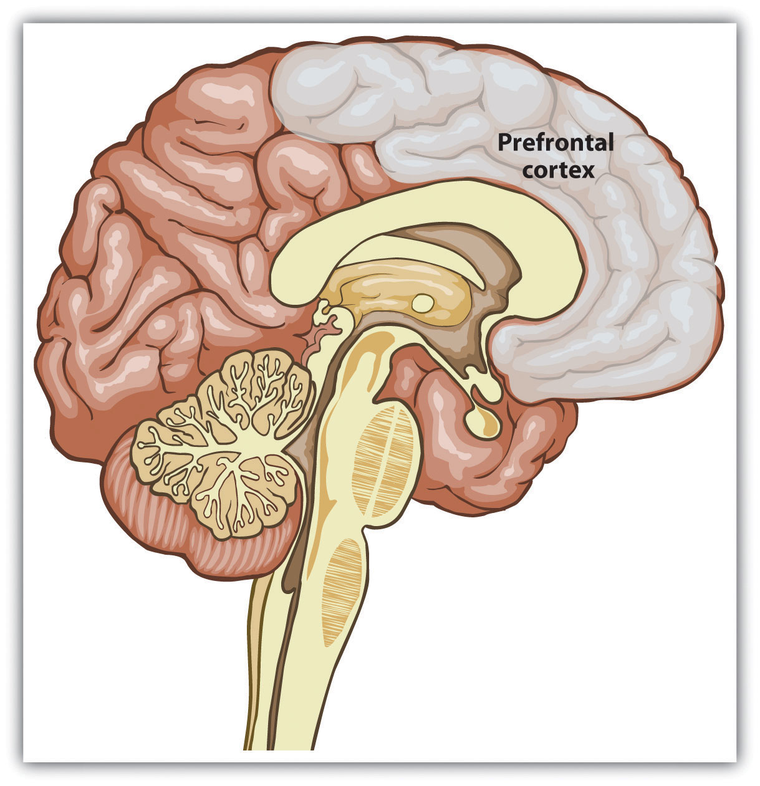
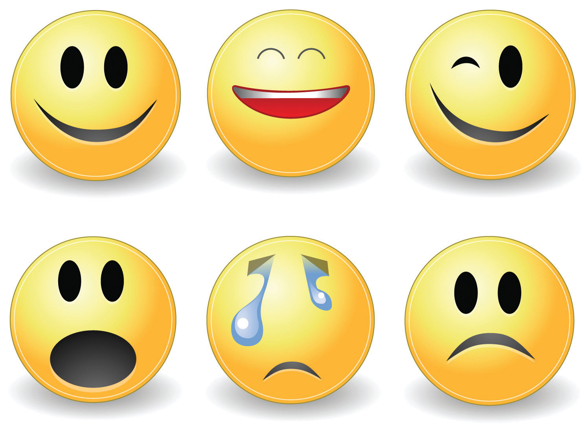
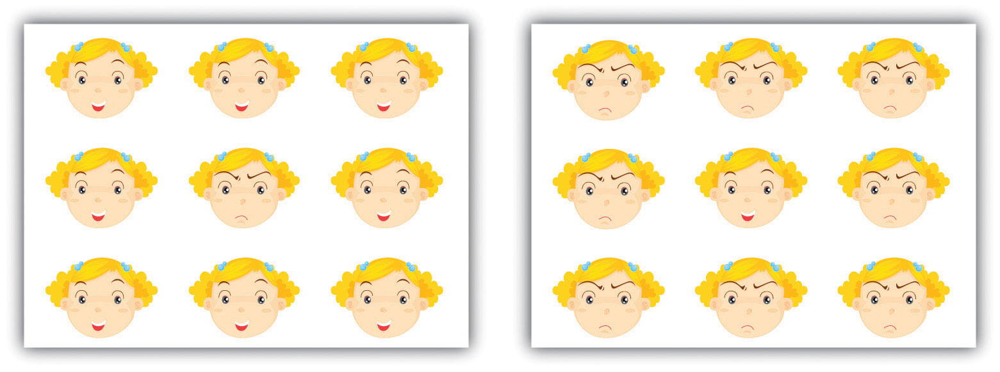
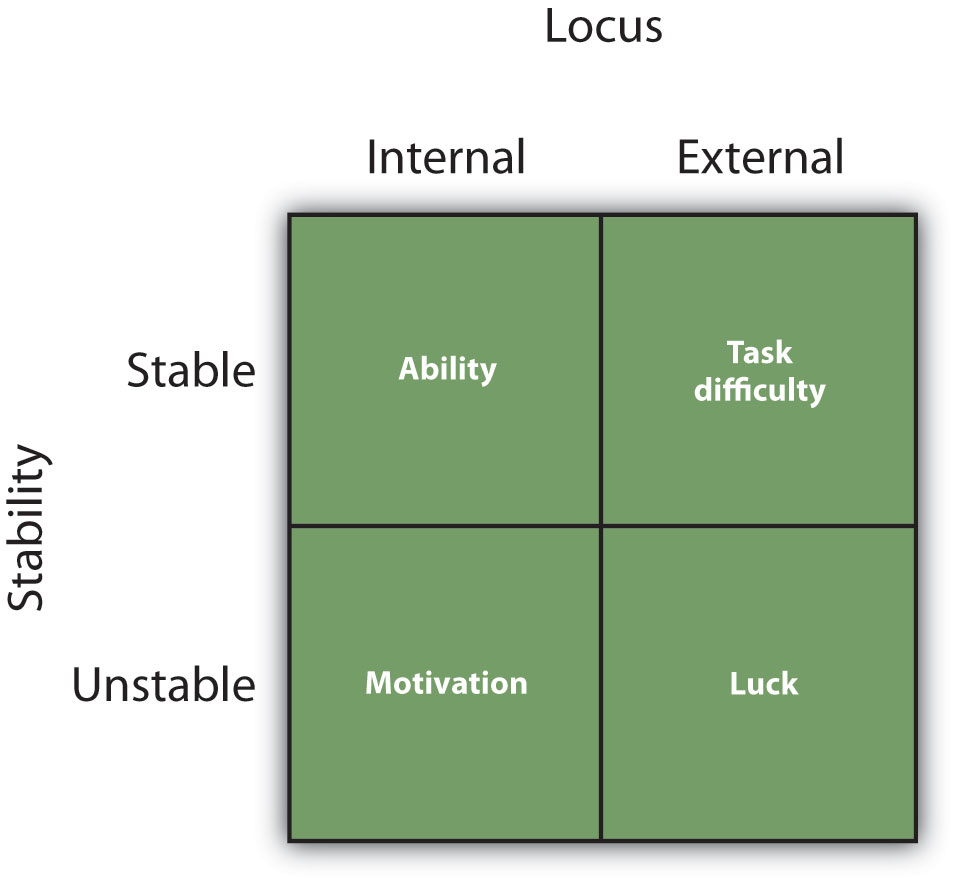
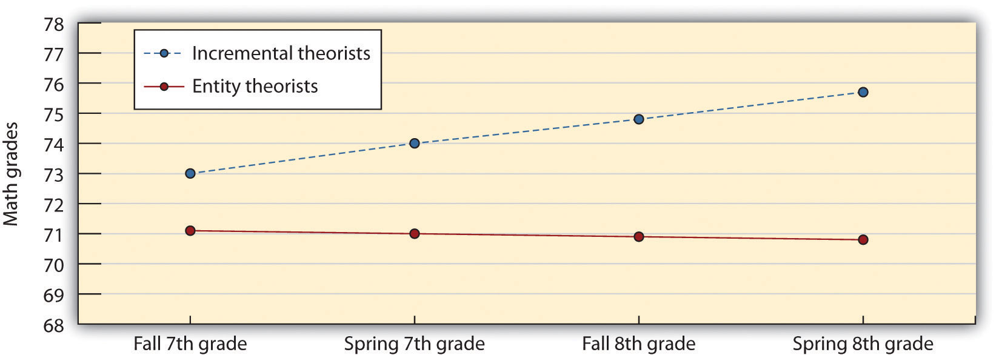
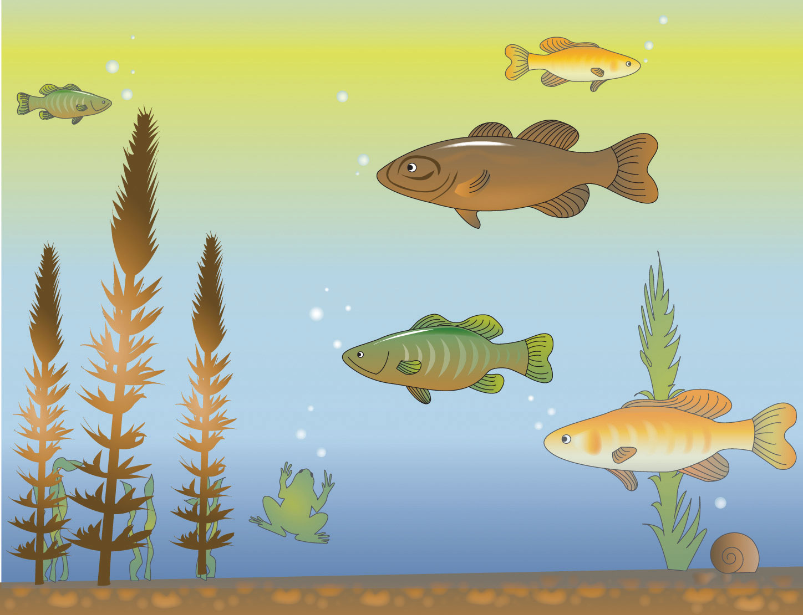

Although the U.S. Transportation Security Administration (TSA) makes use of thorough luggage searches and full-body scanners at airport checkpoints, you might wonder why the agency does not attempt to observe the behaviors of waiting passengers as the corresponding agency in Israel does.
The rationale behind profiling the behavior of passengers is that it is better to detect terrorists who are planning to attack than to attempt to detect the weapons themselves (remember that the 9/11 hijackers were armed only with box cutters.)
The U.S. Screening Passengers by Observation Techniques (SPOT) program was designed to do just that. The program has deployed about 3,000 behavior detection officers in 161 U.S. airports to look for people displaying suspicious behavior.
The officers normally work in pairs, observing passengers’ behavior as they wait in the security line. On average, the officers have less than a minute to assess whether a passenger in line could have malicious intent.
One major flaw of the program is the difficulty of quickly determining who is likely to be a terrorist. From late May 2004 through August 2008, the agents observed about two billion passengers. Out of the two billion, 151,943 people were sent to secondary screening because of a SPOT referral; from those, 14,104 were chosen for more intense scrutiny. In the end, law enforcement officers arrested only 1,083 referred passengers.
Furthermore, according to a recent report, during that same time period at least 16 alleged terrorists were said to have traveled out of a SPOT airport on at least 23 different occasions without being pulled out of line for inspection.
Source: Harwood, M. (2010, December 23). $385 million TSA Program fails to detect terrorists: Behavioral profiling program is pseudoscience. BanderasNews. Retrieved from http://www.banderasnews.com/1012/edat-tsa23.htm.
Although most of us do not need to attempt to detect who is or is not likely to be a terrorist, we all see and meet new people every day, and we make countless decisions about how to react to them. Some of these people are not particularly significant to us—the unknown pedestrians we pass on the sidewalk or the checkout clerk at the grocery, for instance. In these cases, our interactions might be on a fairly superficial level—we might just engage in a quick transaction, nod our head in passing, exchange pleasantries, or accomplish some relatively limited tasks with the person before we move on. Interactions like these are going to involve mostly spontaneous processing on our part, and therefore they may be subject to some errors and biases.
On the other hand, there are people whom we cannot or do not wish to ignore—our family, friends, bosses, and teachers, for example. We might wonder whether the attractive person at the movies has a current partner or whether our new social psychology professor is going to be an easy or hard grader. We might suspect that our boss or best friend is angry at us and wonder if we did something wrong and how we might rectify the situation. In these cases, we are more thoughtful—these individuals have meaning for us because they are essential in helping us meet the important goals of protecting the self and relating to others. We think carefully about how our boss is feeling toward us and our work because we really want and need to know whether we are doing a good enough job.
In this chapter, we will consider how we make sense of other people, including the initial and often intuitive impressions that we rely on so heavily, the all-important nonverbal cues, and the more telling personality traits. Then we will turn to the process of causal attribution, with the goal of understanding how we infer what other people are really like by observing their behaviors. Finally, we will consider how accurate we are in making our determinations about others and will examine the differences among people in their person-perception styles. When we are finished, you will have a better idea of how we make our judgments about other people, and this insight may enable you to perceive others more accurately.
People are very skilled at person perceptionThe process of learning about other people.—the process of learning about other people—and our brains are designed to help us judge others efficiently (Haselton & Funder, 2006; Macrae, 2010).Haselton, M. G., & Funder, D. C. (2006). The evolution of accuracy and bias in social judgment. In M. Schaller, J. A. Simpson, & D. T. Kenrick (Eds.), Evolution and social psychology (pp. 15–37). Madison, CT: Psychosocial Press; Macrae, C. N., & Quadflieg, S. (2010). Perceiving people. In S. T. Fiske, D. T. Gilbert, & G. Lindzey (Eds.), Handbook of social psychology (5th ed., Vol. 1, pp. 428–463). Hoboken, NJ: John Wiley & Sons. Infants prefer to look at faces of people more than they do other visual patterns, and children quickly learn to identify people and their emotional expressions (Turati, Cassia, Simion, & Leo, 2006).Turati, C., Cassia, V. M., Simion, F., & Leo, I. (2006). Newborns’ face recognition: Role of inner and outer facial features. Child Development, 77(2), 297–311. As adults, we are able to identify and remember an unlimited number of people as we navigate our social environments (Haxby, Hoffman, & Gobbini, 2000),Haxby, J. V., Hoffman, E. A., & Gobbini, M. I. (2000). The distributed human neural system for face perception. Trends in Cognitive Sciences, 4(6), 223–233. and we form impressions of those others quickly and without much effort (Carlston & Skowronski, 2005; Fletcher-Watson, Findlay, Leekam, & Benson, 2008).Carlston, D. E., & Skowronski, J. J. (2005). Linking versus thinking: Evidence for the different associative and attributional bases of spontaneous trait transference and spontaneous trait inference. Journal of Personality and Social Psychology, 89(6), 884–898; Fletcher-Watson, S., Findlay, J. M., Leekam, S. R., & Benson, V. (2008). Rapid detection of person information in a naturalistic scene. Perception, 37(4), 571–583. Furthermore, our first impressions are, at least in some cases, remarkably accurate (Ambady, Bernieri, & Richeson, 2000).Ambady, N., Bernieri, F. J., & Richeson, J. A. (2000). Toward a histology of social behavior: Judgmental accuracy from thin slices of the behavioral stream. In M. P. Zanna (Ed.), Advances in experimental social psychology (Vol. 32, pp. 201–271). San Diego, CA: Academic Press.
Recent research is beginning to uncover the areas in our brain where person perception occurs. In one relevant study, Mason and Macrae (2004)Mason, M. F., & Macrae, C. N. (2004). Categorizing and individuating others: The neural substrates of person perception. Journal of Cognitive Neuroscience, 16(10), 1785–1795. doi: 10.1162/0898929042947801 used functional magnetic resonance imaging (fMRI) scans to test whether people stored information about other people in a different location in the brain than where they stored information about animals, and they found that this was the case. The areas of the prefrontal cortex that were more active when people made judgments about people rather than dogs are shown in red in Figure 6.1.
Figure 6.1
Recent advances in neuroimaging techniques have provided information about the brain structures that are involved in person perception. The prefrontal cortex shows strong activation when we are thinking about another person. Data are from Mason, Banfield, and Macrae (2004).Mason, M. F., & Macrae, C. N. (2004). Categorizing and individuating others: The neural substrates of person perception. Journal of Cognitive Neuroscience, 16(10), 1785–1795. doi: 10.1162/0898929042947801
Learning about people is a lot like learning about any other object in our environment, with one major exception. With an object, there is no interaction: We learn about the characteristics of a car or a cell phone, for example, without any concern that the car or the phone is learning about us. It is a one-way process. With people, in contrast, there is a two-way social process: Just as we are learning about another person, that person is learning about us, or potentially attempting to keep us from accurately perceiving him or her. For instance, research has found that when other people are looking directly at us, we process their features more fully and faster, and we remember them better, than when the same people are not looking at us (Hood & Macrae, 2007; Mason, Hood, & Macrae, 2004).Hood, B. M., & Macrae, C. N. (2007). Look into my eyes: The effect of direct gaze on face processing in children and adults. In R. Flom, K. Lee, & D. Muir (Eds.), Gaze-following: Its development and significance (pp. 283–296). Mahwah, NJ: Lawrence Erlbaum; Mason, M. F., Hood, B. M., & Macrae, C. N. (2004). Look into my eyes: Gaze direction and person memory. Memory, 12(5), 637–643.
In the social dynamic with others, then, we have two goals: First, we need to learn about them, and second, we want them to learn about (and, we hope, like and respect) us. Our focus here is on the former process—how we make sense of other people. But remember that just as you are judging them, they are judging you.
We have seen in Chapter 4 "The Self" that when people are asked to describe themselves, they generally do so in terms of their physical features (“I am really tall”), social category memberships (“I am a woman”), and traits (“I am friendly”). These characteristics well reflect the dimensions we use when we try to form impressions of others. In this section, we will review how we initially use the physical features and social category memberships of others (e.g., male or female, race, and ethnicity) to form judgments and then will focus on the role of personality traits in person perception.
Forming Impressions From Thin Slices
Although it might seem surprising, social psychological research has demonstrated that at least in some limited situations, people can draw remarkably accurate conclusions about others on the basis of very little data and that they can do this very quickly. (Rule & Ambady, 2010; Rule, Ambady, Adams, & Macrae, 2008; Rule, Ambady, & Hallett, 2009).Rule, N. O., & Ambady, N. (2010). Democrats and Republicans can be differentiated from their faces. PLoS ONE, 5(1), e8733; Rule, N. O., Ambady, N., Adams, R. B., Jr., & Macrae, C. N. (2008). Accuracy and awareness in the perception and categorization of male sexual orientation. Journal of Personality and Social Psychology, 95(5), 1019–1028; Rule, N. O., Ambady, N., & Hallett, K. C. (2009). Female sexual orientation is perceived accurately, rapidly, and automatically from the face and its features. Journal of Experimental Social Psychology, 45(6), 1245–1251.
Ambady and Rosenthal (1993)Ambady, N., & Rosenthal, R. (1993). Half a minute: Predicting teacher evaluations from thin slices of nonverbal behavior and physical attractiveness. Journal of Personality and Social Psychology, 64(3), 431–441. made videotapes of six female and seven male graduate students while they were teaching an undergraduate course. The courses covered diverse areas of the college curriculum, including humanities, social sciences, and natural sciences. For each instructor, three 10-second video clips were taken—10 seconds from the first 10 minutes of the class, 10 seconds from the middle of the class, and 10 seconds from the last 10 minutes of the class.
Nine female undergraduates were asked to rate the 39 clips of the instructors individually on 15 dimensions, including optimistic, confident, active, enthusiastic, dominant, likable, warm, competent, and supportive. Ambady and her colleagues then compared the ratings of the instructors made by the participants who had seen the instructors for only 30 seconds with the ratings of the same instructors that had been made by actual students who had spent a whole semester with the instructors and who had rated them at the end of the semester on dimensions such as “the quality of the course section” and “the section leader’s performance.” The researchers used the Pearson correlation coefficient to make the comparison (remember that correlations nearer +1.0 or –1.0 are stronger correlations). As you can see in the following table, the ratings of the participants and the ratings of the students were highly positively correlated.
Table 6.1 Forming Accurate Impressions in Only 30 Seconds
| Correlations of Molar Nonverbal Behaviors With College Teacher Effectiveness Ratings (Student Ratings) | |
|---|---|
| Variable | r |
| Accepting | .50 |
| Active | .77** |
| Attentive | .48 |
| Competent | .56* |
| Confident | .82*** |
| Dominant | .79** |
| Empathic | .45 |
| Enthusiastic | .76** |
| Honest | .32 |
| Likable | .73** |
| (Not) Anxious | .26 |
| Optimistic | .84*** |
| Professional | .53 |
| Supportive | .55* |
| Warm | .67* |
| Global Variable | .76** |
| *p<.05. **p<.01. ***p<.001. Data are from Ambady and Rosenthal (1993).Ambady, N., & Rosenthal, R. (1993). Half a minute: Predicting teacher evaluations from thin slices of nonverbal behavior and physical attractiveness. Journal of Personality and Social Psychology, 64(3), 431–441. | |
If the finding that we can make accurate judgments about other people in only 30 seconds surprises you, then perhaps you will be even more surprised to learn that we do not even need that much time. Willis and Todorov (2006)Willis, J., & Todorov, A. (2006). First impressions: Making up your mind after a 100ms exposure to a face. Psychological Science, 17(7), 592–598. found that even a tenth of a second was enough to make judgments that correlated highly with the same judgments made by other people who were given several minutes to make the judgments. Other research has found that we can make accurate judgments in seconds or even milliseconds about, for instance, the personalities of salespersons (Ambady, Krabbenhoft, & Hogan, 2006)Ambady, N., Krabbenhoft, M. A., & Hogan, D. (2006). The 30-sec sale: Using thin-slice judgments to evaluate sales effectiveness. Journal of Consumer Psychology, 16(1), 4–13. doi: 10.1207/s15327663jcp1601_2 and even whether or not a person is prejudiced (Richeson & Shelton, 2005).Richeson, J. A., & Shelton, J. N. (2005). Brief report: Thin slices of racial bias. Journal of Nonverbal Behavior, 29(1), 75–86.
Todorov, Mandisodza, Goren, and Hall (2005)Todorov, A., Mandisodza, A. N., Goren, A., & Hall, C. C. (2005). Inferences of competence from faces predict election outcomes. Science, 308(5728), 1623–1626. reported a demonstration of just how important such initial impressions can be. These researchers showed participants pairs of political candidates who had run against each other in previous elections for the U.S. Senate and House of Representatives. Participants saw only the faces of the candidates, and they saw them in some cases for only one second. Their task was to judge which person in of each pair was the most competent. Todorov et al. (2005)Todorov, A., Mandisodza, A. N., Goren, A., & Hall, C. C. (2005). Inferences of competence from faces predict election outcomes. Science, 308(5728), 1623–1626. found that these judgments predicted the actual result of the election, such that 68% of the time the person judged to have the most competent face won.
Rule and Ambady (2010)Rule, N. O., & Ambady, N. (2010). Democrats and Republicans can be differentiated from their faces. PLoS ONE, 5(1), e8733. showed that perceivers were also able to accurately distinguish whether people were Democrats or Republicans based only on photos of their faces. Republicans were perceived as more powerful than Democrats, and Democrats were perceived as warmer than Republicans. And Rule, Ambady, Adams, and Macrae (2008)Rule, N. O., Ambady, N., Adams, R. B., Jr., & Macrae, C. N. (2008). Accuracy and awareness in the perception and categorization of male sexual orientation. Journal of Personality and Social Psychology, 95(5), 1019–1028. doi: 10.1037/a0013194 found that people could accurately determine the sexual orientation of faces presented in photos (gay or straight) based on their judgments of what they thought “most people” would say.
Taken together, these data confirm that we can form a wide variety of initial impressions of others quickly and, at least in some cases, quite accurately. Of course, in these situations (unlike those faced by airport security guards), the people who were being observed were not trying to hide their personalities from the observers.
One way that the participants in the studies we just described may have been able to form such accurate impressions of instructors on the basis of such little information was by viewing their nonverbal behaviorAny type of communication that does not involve speaking.. Nonverbal behavior is any type of communication that does not involve speaking, including facial expressions, body language, touching, voice patterns, and interpersonal distance. Nonverbal behaviors are used to reinforce spoken words (Hostetter, 2011)Hostetter, A. B. (2011). When do gestures communicate? A meta-analysis. Psychological Bulletin, 137 (2), 297–315. but also include such things as interpersonal distance (how far away from you the other person stands), tone of voice, eye gaze, and hand gestures and body positions (DePaulo et al., 2003).DePaulo, B. M., Lindsay, J. J., Malone, B. E., Muhlenbruck, L., Charlton, K., & Cooper, H. (2003). Cues to deception. Psychological Bulletin, 129(1), 74–118.
The ability to decode nonverbal behavior is learned early, even before the development of language (Walker-Andrews, 2008).Walker-Andrews, A. S. (2008). Intermodal emotional processes in infancy. In M. Lewis, J. M. Haviland-Jones, & L. F. Barrett (Eds.), Handbook of emotions (3rd ed., pp. 364–375). New York, NY: Guilford Press. We tend to like people who have pleasant tones of voice and open postures, who stand an appropriate distance away from us, and who look at and touch us for the “right” amount of time—not too much or too little. And of course behavior matters—people who walk faster are perceived as happier and more powerful than those who walk more slowly (Montepare & Zebrowitz-McArthur, 1988).Montepare, J. M., & Zebrowitz-McArthur, L. (1988). Impressions of people created by age-related qualities of their gaits. Journal of Personality and Social Psychology, 55(4), 547–556.
The importance of body movement has been demonstrated in studies in which people are viewed in point-light displays in dark rooms with only small lights at their joints. Research has found that observers are able to accurately recognize others’ behaviors from these minimal displays (Clarke, Bradshaw, Field, Hampson, & Rose, 2005; Johnson, Gill, Reichman, & Tassinary, 2007; Heberlein, Adolphs, Tranel, & Damasio, 2004; See Figure 6.2 "Point-Light Displays").Clarke, T. J., Bradshaw, M. F., Field, D. T., Hampson, S. E., & Rose, D. (2005). The perception of emotion from body movement in point-light displays of interpersonal dialogue. Perception, 34(10), 1171–1180; Johnson, K. L., Gill, S., Reichman, V., & Tassinary, L. G. (2007). Swagger, sway, and sexuality: Judging sexual orientation from body motion and morphology. Journal of Personality and Social Psychology, 93(3), 321–334; Heberlein, A. S., Adolphs, R., Tranel, D., & Damasio, H. (2004). Cortical regions for judgments of emotions and personality traits from point-light walkers. Journal of Cognitive Neuroscience, 16(7), 1143–1158. And people can also determine personality by tone of voice provided by degraded and incomprehensible speech (Ambady, Krabbenhoft, & Hogan, 2006).Ambady, N., Krabbenhoft, M. A., & Hogan, D. (2006). The 30-sec sale: Using thin-slice judgments to evaluate sales effectiveness. Journal of Consumer Psychology, 16(1), 4–13. doi: 10.1207/s15327663jcp1601_2
Figure 6.2 Point-Light Displays
People can accurately detect behaviors, emotions, and traits from point-light displays. You might want to try your skills here: http://astro.temple.edu/~tshipley/mocap/dotMovie.html.
Although they may be pretty good at it in some cases, people are often not aware of their ability to make accurate judgments. Rule, Ambady, Adams, and Macrae (2008)Rule, N. O., Ambady, N., Adams, R. B., Jr., & Macrae, C. N. (2008). Accuracy and awareness in the perception and categorization of male sexual orientation. Journal of Personality and Social Psychology, 95(5), 1019–1028. doi: 10.1037/a0013194 found that even though the participants in their research were quite accurate in their perceptions, they could not articulate how they made their judgments. They claimed that they were “just guessing” and could hardly believe that they were getting the judgments right. These results suggest that they were made without any conscious awareness on the part of the judgers. Furthermore, the participants’ judgments of their own accuracy were not generally correlated with their actual accurate judgments.
The particular nonverbal behaviors that we use, as well as their meanings, are determined by social norms, and these norms may vary across cultures. For example, people who live in warm climates nearer the equator use more nonverbal communication (e.g., talking with their hands or showing strong facial expressions) and are more likely to touch each other during conversations than people who live in colder climates nearer Earth’s poles (Manstead, 1991; Pennebaker, Rime, & Blankenship, 1996).Manstead, A. S. R. (Ed.). (1991). Expressiveness as an individual difference. New York, NY: Cambridge University Press; Pennebaker, J. W., Rime, B., & Blankenship, V. E. (1996). Stereotypes of emotional expressiveness of Northerners and Southerners: A cross-cultural test of Montesquieu’s hypotheses. Journal of Personality and Social Psychology, 70(2), 372–380. And the appropriate amount of personal space to keep between ourselves and others also varies across cultures. In some cultures—for instance, South American countries—it is appropriate to stand very close to another person while talking to him or her; in other cultures—for example, the United States and Europe—more interpersonal space is the norm (Knapp & Hall, 2006).Knapp, M. L., & Hall, J. A. (2006). Nonverbal communication in human interaction (6th ed.). Belmont, CA: Thomson Wadsworth. The appropriate amount of eye contact with others is also determined by culture. In Latin America, it is appropriate to lock eyes with another person, whereas in Japan, people generally try to avoid eye contact.
Although nonverbal behaviors can be informative during the initial stages of person perception, they are limited in what they can convey. In general, they communicate our own status or dominance (self-concern) as well as our interest in or liking of another (other-concern). If we notice that someone is smiling and making eye contact with us while leaning toward us in conversation, we can be pretty sure that he or she likes us. On the other hand, if someone frowns at us, touches us inappropriately, or moves away when we get close, we may naturally conclude that they do not like us.
We may also use nonverbal behaviors to try out new situations: If we move a little closer and look at someone a bit longer, we communicate our interest. If these responses are reciprocated by the other person, that can indicate that he or she likes us, and we can move on to share other types of information. If the initial nonverbal behaviors are not reciprocated, then we may conclude that the relationship may not work out and we can withdraw before we go “too far.” When we use nonverbal communication, we do not have to come right out and say “I like you.” That’s dangerous!
Nonverbal behavior provides different information than verbal behavior because people frequently say one thing and do another. Perhaps you remember being really angry at someone but not wanting to let on that you were mad, so you tried to hide your emotions by not saying anything. But perhaps your nonverbal behavior eventually gave you away to the other person: Although you were trying as hard as you could not to, you just looked angry. I remember well a student I had in my social psychology class a few years ago. He would come up to me after class every few lectures to tell me how much he liked my class, what a great teacher I was, and so forth. But I noticed a strange discrepancy: When I watched him during class, he never seemed to be paying much attention. He was either doing a crossword puzzle or fiddling with his cell phone or even sleeping! What kind of impression do you think I formed of this student? Did I base it more on his verbal comments after class, or more on his nonverbal behavior that I observed when he didn’t realize I was watching him?
If you guessed that I believed my student’s nonverbal behavior, you are correct. We frequently rely more on nonverbal than on verbal behavior when their messages are contradictory. It is relatively easy to monitor our verbal behavior but harder to monitor the nonverbal. However, we expect that people who need to deceive others—for instance, good poker players—are able to monitor their nonverbal behavior better than most people, making it difficult to get a good read on them.
Because we use them so frequently in our social interactions, we are fluent readers of nonverbal behaviors. And we realize that we can better communicate with others when we use them. Indeed, it is difficult to communicate accurately when we cannot express ourselves nonverbally (Krauss, Chen, & Chawla, 1996).Krauss, R. M., Chen, Y., & Chawla, P. (Eds.). (1996). Nonverbal behavior and nonverbal communication: What do conversational hand gestures tell us? San Diego, CA: Academic Press. You probably have noticed this yourself. If you e-mail or text a message to your friend, for instance, you need to be careful about using sarcasm because he or she might misinterpret your meaning. Because nonverbal information is so important, we quickly learned to incorporate it, in the form of emoticons, in our text messages (Figure 6.3).
Figure 6.3
Emoticons are a type of nonverbal behavior for electronic messages.
Image courtesy of Gustavo26776, http://wikimediafoundation.org/wiki/File:Emoticons.gif.
One thing that you might have noticed when you first looked at the images presented earlier in the chapter is that you tended to like some of the people and to dislike others. It is not surprising that you had these emotions—these initial affective reactions are an essential and highly adaptive part of person perception. One of the things that we need to determine when we are first perceiving someone is whether the person poses any threat to our well-being. We may dislike or experience negative emotions about people because we feel that they are likely to be sick or to harm us, just as we may like and feel positively about them if we feel that they can help us (Rozin & Royzman, 2001).Rozin, P., & Royzman, E. B. (2001). Negativity bias, negativity dominance, and contagion. Personality and Social Psychology Review, 5(4), 296–320. Research has found that the threat and the trustworthiness of others are particularly quickly perceived, at least by people who are not trying to hide their intentions (Bar, Neta, & Linz, 2006; Todorov, Said, Engel, & Oosterhof, 2008).Bar, M., Neta, M., & Linz, H. (2006). Very first impressions. Emotion, 6(2), 269–278. doi: 10.1037/1528–3542.6.2.269; Todorov, A., Said, C. P., Engel, A. D., & Oosterhof, N. N. (2008). Understanding evaluation of faces on social dimensions. Trends in Cognitive Sciences, 12(12), 455–460. doi: 10.1016/j.tics.2008.10.001
Most people with whom we interact are not dangerous, nor do they create problems for us. In fact, when we are asked to rate how much we like complete strangers, we generally rate them positively (Sears, 1986).Sears, D. O. (1986). College sophomores in the laboratory: Influences of a narrow data base on social psychology’s view of human nature. Journal of Personality and Social Psychology, 51(3), 515–530. Because we expect people to be positive, people who are negative or threatening are salient, likely to create strong emotional responses, and relatively easy to spot.
Compared with positive information, negative information about a person tends to elicit more physiological arousal, draw greater attention, and exert greater impact on our judgments and impressions of the person. Hansen and Hansen (1988)Hansen, C. H., & Hansen, R. D. (1988). Finding the face in the crowd: An anger superiority effect. Journal of Personality and Social Psychology, 54(6), 917–924. had undergraduate students complete a series of trials in which they were shown, for very brief time periods, “crowds” of nine faces (Figure 6.4 "Faces"). On some of the trials, all the faces were happy ones or all the faces were angry. On other trials, the “crowd” was made up of eight happy faces and one angry face, or eight angry faces and one happy face. For each trial, the participants were instructed to say, as quickly as possible, whether the crowd contained a discrepant face or not. Hansen and Hansen found that the students were significantly faster at identifying the single angry face among the eight happy ones than they were at identifying the single happy face among the eight angry ones and that they also made significantly fewer errors doing so. The researchers’ conclusion was that angry, and thus threatening, faces quickly popped out from the crowd. Similarly, Ackerman et al. (2006)Ackerman, J. M., Shapiro, J. R., Neuberg, S. L., Kenrick, D. T., Becker, D. V., Griskevicius, V.,…Schaller, M. (2006). They all look the same to me (unless they’re angry): From out-group homogeneity to out-group heterogeneity. Psychological Science, 17(10), 836–840. found that people were better at recognizing the faces of other people when those faces had angry, rather than neutral, expressions, and Dijksterhuis and Aarts (2003)Dijksterhuis, A., & Aarts, H. (2003). On wildebeests and humans: The preferential detection of negative stimuli. Psychological Science, 14(1), 14–18. found that people could more quickly and more accurately recognize negative, rather than positive, words.
Figure 6.4 Faces
Because negative faces are more salient and therefore more likely to grab our attention than are positive faces, people are faster at locating a single negative face in a display of positive faces than they are to locate a single positive face in a display of negative faces.
Our brains seem to be hardwired to detect negative behaviors (Adams, Gordon, Baird, Ambady, & Kleck, 2003),Adams, R. B., Jr., Gordon, H. L., Baird, A. A., Ambady, N., & Kleck, R. E. (2003). Effects of gaze on amygdala sensitivity to anger and fear faces. Science, 300(5625), 1536. and at an evolutionary level this makes sense. It is important to tell the “good guys” from the “bad guys” and to try to avoid interacting with the latter. In one study, Tiffany Ito and her colleagues (Ito, Larsen, Smith, & Cacioppo, 1998)Ito, T. A., Larsen, J. T., Smith, N. K., & Cacioppo, J. T. (1998). Negative information weighs more heavily on the brain: The negativity bias in evaluative categorizations. Journal of Personality and Social Psychology, 75(4), 887–900. showed college students a series of positive, negative, and neutral images while their event-related brain potentials were collected. The researchers found that different parts of the brain reacted to positive and negative images and that the response to negative images was greater overall. They concluded that “negative information weighs more heavily on the brain” (p. 887). In sum, the results of research in person perception are clear: When we are perceiving people, negative information is simply more important than positive information (Pratto & John, 1991).Pratto, F., & John, O. P. (1991). Automatic vigilance: The attention-grabbing power of negative social information. Journal of Personality and Social Psychology, 61(3), 380–391.
Detecting Deception
One important person-perception task that we must all engage in sometimes is to try to determine whether other people are lying to us. We might wonder whether our poker opponent is bluffing, whether our partner is being honest when she tells us she loves us, or whether our boss is really planning to give us the promotion she has promised. This task is particularly important for members of courtroom juries, who are asked determine the truth or falsehood of the testimony given by witnesses. American jurors are instructed to judge the person’s truthfulness by considering his or her “demeanor upon the witness stand” and “manner of testifying” (Judicial Committee on Model Jury Instructions for the Eighth Circuit, 2002, p. 53).Federal Evidence Review. Federal jury instructions resource page. Retrieved from http://federalevidence.com/evidence-resources/federal-jury-instructions And detecting deception is perhaps even more important for those whose job is to provide public security. How good are professionals, such as airport security officers, police detectives, and members of the CIA, FBI, and U.S. Secret Service, at determining whether or not someone is telling the truth?
It turns out that the average person is only moderately good at detecting deception and that experts do not seem to be much better. In a recent meta-analysis, researchers looked at over 200 studies that had tested the ability of almost 25,000 people to detect deception (Bond & DePaulo, 2006).Bond, C. F., Jr., & DePaulo, B. M. (2006). Accuracy of deception judgments. Personality and Social Psychology Review, 10(3), 214–234. The researchers found that people were better than chance at doing so but were not really that great. The participants in the studies were able to correctly identify lies and truths about 54% of the time (chance performance is 50%). This is not a big advantage, but it is one that could have at least some practical consequences and that suggests that we can at least detect some deception. However, the meta-analysis also found that experts—including police officers, detectives, judges, interrogators, criminals, customs officials, mental health professionals, polygraph examiners, job interviewers, federal agents, and auditors—were not significantly better at detecting deception than were nonexperts. These findings seem consistent with the failure of the agents discussed in the chapter opener who attempted to spot potential hijackers at U.S. airports.
Why is it so difficult for us to detect liars? One reason is that people do not expect to be lied to. Most people are good and honest folks, we expect them to tell the truth, and we tend to give them the benefit of the doubt (Buller, Stiff, & Burgoon, 1996; Gilbert, Krull, & Malone, 1990).Buller, D. B., Stiff, J. B., & Burgoon, J. K. (1996). Behavioral adaptation in deceptive transactions: Fact or fiction: Reply to Levine and McCornack. Human Communication Research, 22(4), 589–603; Gilbert, D. T., Krull, D. S., & Malone, P. S. (1990). Unbelieving the unbelievable: Some problems in the rejection of false information. Journal of Personality and Social Psychology, 59(4), 601–613. In fact, people are more likely to expect deception when they view someone on a videotape than when they are having an interpersonal interaction with the person. It’s as if we expect the people who are right around us to be truthful (Bond & DePaulo, 2006).Bond, C. F., Jr., & DePaulo, B. M. (2006). Accuracy of deception judgments. Personality and Social Psychology Review, 10(3), 214–234.
A second reason is that most people are pretty good liars. The cues that liars give off are quite faint, particularly when the lies that they are telling are not all that important.
Bella DePaulo and her colleagues (DePaulo et al., 2003)DePaulo, B. M., Lindsay, J. J., Malone, B. E., Muhlenbruck, L., Charlton, K., & Cooper, H. (2003). Cues to deception. Psychological Bulletin, 129(1), 74–118. found that in most cases, it was very difficult to tell if someone was lying, although it was easier when the liar was trying to cover up something important (e.g., a sexual transgression) than when he or she was lying about something less important. De Paulo and her colleagues did find, however, that there were some reliable cues to deception.
Compared with truth tellers, liars
A third reason it is difficult for us to detect liars is that we tend to think we are better at catching lies than we actually are. This overconfidence may prevent us from working as hard as we should to try to uncover the truth.
Finally, most of us do not really have a very good idea of how to detect deception—we tend to pay attention to the wrong things. Many people think that a person who is lying will avert his or her gaze or will not smile or that perhaps he or she will smile too much. But it turns out that faces are not that revealing. The problem is that liars can more easily control their facial expressions than they can control other parts of their bodies. In fact, Ekman and Friesen (1974)Ekman, P., & Friesen, W. V. (1974). Detecting deception from the body or face. Journal of Personality and Social Psychology, 29(3), 288–298. doi: 10.1037/h0036006 found that people were better able to detect other people’s true emotions when they could see their bodies but not their faces than when they could see their faces but not their bodies. Although we may think that deceivers do not smile when they are lying, it is actually common for them to mask their statements with false smiles—smiles that look very similar to the more natural smile that we make when we are really happy (Ekman & Davidson, 1993; Frank & Ekman, 1993).Ekman, P., & Davidson, R. J. (1993). Voluntary smiling changes regional brain activity. Psychological Science, 4(5), 342–345; Frank, M. G., & Ekman, P. (1993). Not all smiles are created equal: The differences between enjoyment and nonenjoyment smiles. Humor: International Journal of Humor Research, 6(1), 9–26.
Recently, new advances in technology have begun to provide new ways to assess deception. Some new software analyzes the language of truth tellers, other software analyzes facial microexpressions that are linked with lying (Newman, Pennebaker, Berry, & Richards, 2003),Newman, M. L., Pennebaker, J. W., Berry, D. S., & Richards, J. M. (2003). Lying words: Predicting deception from linguistic styles. Personality and Social Psychology Bulletin, 29(5), 665–675. and still other software uses neuroimaging techniques to try to catch liars (Langleben et al., 2005).Langleben, D. D., Loughead, J. W., Bilker, W. B., Ruparel, K., Childress, A. R., Busch, S. I., & Gur, R. C. (2005). Telling truth from lie in individual subjects with fast event-related fMRI. Human Brain Mapping, 26(4), 262–272. Whether these techniques will be successful, however, remains to be seen.
Although we can learn some things about others by observing their physical characteristics and their nonverbal behaviors, to really understand them we will eventually need to know their personality traits. Traits are important because they are the basic language by which we understand and communicate about people. When we talk about other people, we describe them using trait terms. Our friends are “fun,” “creative,” and “crazy in a good way,” or “quiet,” “serious,” and “controlling.” The language of traits is a powerful one—indeed, there are over 18,000 trait terms in the English language.
Let’s consider for a moment how people might use trait terms to form an overall evaluation of another person. Imagine that you have to describe two friends of yours, William and Frank, to another person, Rianna, who might be interested in dating one of them. You’ll probably describe the two men in terms of their physical features first, but then you’ll want to say something about their personalities. Let’s say that you want to make both William and Frank sound as good as possible to Rianna, but you also want to be honest and not influence her one way or the other. How would you do that? You would probably start by mentioning their positive traits—William is “intelligent” and “serious,” Frank is “fun” and “exciting.” But to be fair, you would also need to mention their negative traits—William sometimes seems “depressed,” and Frank can be “inconsiderate” (sometimes he doesn’t show up on time).
You might figure that Rianna will just combine whatever information you give her, perhaps in a mathematical way. For instance, she might listen to all the traits that you mention, decide how positive or negative each one is, and then add the traits together or average them. Research has found that people do exactly that, both for strangers and for people that they know very well (Anderson, 1974; Falconi & Mullet, 2003).Anderson, N. H. (1974). Cognitive algebra: Integration theory applied to social attribution. In L. Berkowitz (Ed.), Advances in experimental social psychology (Vol. 7, pp. 1–101). New York, NY: Academic Press; Falconi, A., & Mullet, E. (2003). Cognitive algebra of love through the adult life. International Journal of Aging and Human Development, 57(3), 275–290. Consider what might happen if you gave Rianna the following information:
Rianna might decide to score each trait on a scale of +5 (very positive) to –5 (very negative). Once she has these numbers, she could then either add them together or average them to get an overall judgment.
| William | Smart | +5 |
| Serious | +1 | |
| Kind | +4 | |
| Sad | –4 | |
| Sum | +6.0 | |
| Average | +1.5 | |
| Frank | Fun | +3 |
| Happy | +2 | |
| Selfish | –4 | |
| Inconsiderate | –5 | |
| Sum | –4.0 | |
| Average | –1.0 |
Based on this scoring, Rianna would probably decide that she likes William more than Frank. Of course, different people might weight the traits in somewhat different ways, and this would lead different people to draw different impressions about William and Frank. But there is pretty good agreement among most people about the meaning of traits, at least in terms of the overall positivity or negativity of each trait, and thus most people would be likely to draw similar conclusions.
Now imagine that you later thought of some other new, moderately positive characteristics about William—that he was also “careful” and “helpful.” Whether you told her about them or not might depend on how you thought they would affect her overall impression of William. Perhaps these new traits would make Rianna like William more (after all, they do add new positive information about him). But perhaps they might make her like him less (if the new, moderately positive information diluted the existing positive impression she has already formed about him).
One way to think about this is to consider whether Rianna might be adding the traits together or averaging them. In our first example, it didn’t matter because the outcome was the same. But now it might—if she’s adding the traits together, then Rianna will probably like William more after she hears the new information, because new positive traits have been added to the existing sum score. If she is averaging the traits together, however, then Rianna will probably like him less than she did before, because the new, more moderate information tends to dilute the initial impressions.
It turns out that in most cases, our judgments are better predicted by mental averaging than by mental adding (Mills, 2007).Mills, J. (2007). Evidence forming attitudes from combining beliefs about positive attributes of activities follows averaging (Unpublished manuscript). University of Maryland, College Park. What this means is that when you are telling someone about another person and you are trying to get them to like the person, say the most positive things that you know but leave out the more moderate (although also positive) information. The moderate information is more likely to dilute, rather than enhance, the more extreme information.
Although the averaging model is quite good at predicting final impressions, it is not perfect. This is because some traits are simply weighted more heavily than others. For one, negative information is more heavily weighted than is positive information (Rozin & Royzman, 2001).Rozin, P., & Royzman, E. B. (2001). Negativity bias, negativity dominance, and contagion. Personality and Social Psychology Review, 5(4), 296–320. In addition to the heavy weight that we give to negative traits, we give a particular emphasis to the traits “warm” and “cold.” Imagine two men, Brad and Phil, who were described with these two sets of characteristics:
As you can see, the descriptions are identical except for the presence of “warm” and “cold.” Solomon Asch (1946)Asch, S. E. (1946). Forming impressions of personality. Journal of Abnormal and Social Psychology, 41, 258–290. found that people described with these two sets of traits were perceived very differently—the “warm” person very positively and the “cold” person very negatively.
To test whether or not these differences would influence real behavior, Harold Kelley (1950)Kelley, H. H. (1950). The warm-cold variable in first impressions of persons. Journal of Personality,18(4), 431–439. had students read about a professor who was described either as “rather cold” or as “very warm.” Then the professor came into the classroom and led a 20-minute discussion group with the students. Although the professor behaved in the same way for both groups, the students nevertheless reacted very differently to him. The students who were expecting the “warm” instructor were more likely to participate in the discussion, in comparison with those who were expecting him to be “cold.” And at the end of the discussion, the students also rated the professor who had been described as “warm” as being significantly more humorous, sociable, popular, and better natured than the “cold” professor. Moreover, the effects of warmth and coolness seem to be wired into our bodily responses. Research has found that even holding a cup of hot, versus iced, coffee or making judgments in warm, versus cold, rooms leads people to judge others more positively (Ijzerman & Semin, 2009; Williams & Bargh, 2008).Ijzerman, H., & Semin, G. R. (2009). The thermometer of social relations: Mapping social proximity on temperature. Psychological Science, 20(10), 1214–1220; Williams, L. E., & Bargh, J. A. (2008). Experiencing physical warmth promotes interpersonal warmth. Science, 322(5901), 606–607.
In short, the particular dimension warm versus cold makes a big difference in how we perceive people—much bigger than do other traits. As a result, the traits of warm and cold are known as central traitsThe traits warm and cold, which have a very strong influence on our impressions of others. (Asch, 1946).Asch, S. E. (1946). Forming impressions of personality. Journal of Abnormal and Social Psychology, 41, 258–290. The powerful influence of central traits is due to two things. For one, they lead us to make inferences about other traits that might not have been mentioned. The students who heard that the professor was “warm” might also have assumed that he had other positive traits (maybe “nice” and “funny”), in comparison with those who heard that he was “cold.” Second, the important central traits also color our perceptions of the other traits that surround them. When a person is described as “warm” and “intelligent,” the meaning of “intelligent” seems a lot better than does the term “intelligent” in the context of a person who is also “cold.” Overall, the message is clear: If you want to get someone to like you, try to act in a warm manner toward them. Be friendly, nice, and interested in what they say. This attention you pay to the other will be more powerful than any other characteristics that you might try to display to them.
It has frequently been said that “first impressions matter.” Social psychological research supports this idea. Information that we learn first is weighted more heavily than is information that comes later. This is known as the primacy effectThe tendency for information that we learn first to be weighted more heavily than is information that we learn later.. One demonstration of the primacy effect was conducted by Solomon Asch (1946).Asch, S. E. (1946). Forming impressions of personality. Journal of Abnormal and Social Psychology, 41, 258–290. In his research, participants learned some traits about a person and then made judgments about him. One half of the participants saw this list of traits:
The other half of the participants saw this list:
You may have noticed something interesting about these two lists—they contain exactly the same traits but in reverse order.
Asch discovered something interesting in his study: Because the traits were the same, we might have expected that both groups would form the same impression of the person, but this was not at all the case. Rather, Asch found that the participants who heard the first list, in which the positive traits came first, formed much more favorable impressions than did those who heard the second list, in which the negative traits came first. Similar findings were found by Edward Jones (1968),Jones, E. E. (1968). Pattern of performance and ability attribution: An unexpected primacy effect. Journal of Personality and Social Psychology, 10(4), 317–340. who had participants watch one of two videotapes of a woman taking an intelligence test. In each video, the woman correctly answered the same number of questions and got the same number wrong. However, when the woman got most of her correct answers in the beginning of the test but got more wrong near the end, she was seen as more intelligent than when she got the same number correct but got more correct at the end of the test.
Primacy effects also show up in other domains, even in those that seem really important. For instance, Koppell and Steen (2004)Koppell, J. G. S., & Steen, J. A. (2004). The effects of ballot position on election outcomes. Journal of Politics, 66(1), 267–281. found that in elections in New York City, the candidate who was listed first on the ballot was elected more than 70% of the time, and Miller and Krosnick (1998)Miller, J. M., & Krosnick, J. A. (1998). The impact of candidate name order on election outcomes. Public Opinion Quarterly, 62(3), 291–330. found similar effects for candidate preferences in laboratory studies.
This is not to say that it is always good to be first. In some cases, the information that comes last can be most influential. Recency effects, in which information that comes later is given more weight, although much less common than primacy effects, may sometimes occur. For example, Bruine de Bruin (2005)de Bruin, W. B. (2005). Save the last dance for me: Unwanted serial position effects in jury evaluations. Acta Psychologica, 118(3), 245–260. doi: 10.1016/j.actpsy.2004.08.005 found that in competitions such as the Eurovision Song Contest and ice skating, higher marks were given to competitors who performed last.
Considering the primacy effect in terms of the cognitive processes central to human information processing leads us to understand why it can be so powerful. For one, humans are cognitive misers. Because we desire to conserve our energy, we are more likely to pay more attention to the information that comes first and less likely to attend to information that comes later. In fact, when people read a series of statements about a person, the amount of time they spend reading the items declines with each new piece of information (Belmore & Hubbard, 1987).Belmore, S. M., & Hubbard, M. L. (1987). The role of advance expectancies in person memory. Journal of Personality and Social Psychology, 53(1), 61–70. Not surprisingly, then, we are more likely to show the primacy effect when we are tired than when we are wide awake and when we are distracted than when we are paying attention (webster, Richter, & Kruglanski, 1996).webster, D. M., Richter, L., & Kruglanski, A. W. (1996). On leaping to conclusions when feeling tired: Mental fatigue effects on impressional primacy. Journal of Experimental Social Psychology, 32(2), 181–195.
Another reason for the primacy effect is that the early traits lead us to form an initial expectancy about the person, and once that expectancy is formed, we tend to process information in ways that keep that expectancy intact. This of course is a classic case of assimilation—once we have developed a schema, it becomes difficult to change it. If we learn that a person is “intelligent” and “industrious,” those traits become cognitively accessible, which leads us to develop an expectancy about the person. When the information about the negative features comes later, these negatives will be assimilated into the existing knowledge more than the existing knowledge is accommodated to fit the new information. Once we have formed a positive impression, the new negative information just doesn’t seem as bad as it might have been had we learned it first. On the other hand, if we learn the negatives first, the opposite happens—the positives don’t seem so positive when we get to them.
You can be sure that it would be good to take advantage of the primacy effect if you are trying to get someone to like you. Begin with your positive characteristics, and only bring the negatives up later. This will create a much better outcome than beginning with the negatives. And if your instructor is going to write a recommendation letter for you, she’ll likely do the same thing—she’ll put your good qualities first and save the poorer ones (if you have any!) for the second page of the letter.
We have seen that we use personality traits to help us understand and communicate about the people we know. But how do we know what traits people have? People don’t walk around with labels saying “I am generous” or “I am aggressive” on their foreheads. In some cases, we may learn about a person indirectly, for instance, through the comments that other people make about that person. We also use the techniques of person perception to help us learn about people and their traits by observing them and interpreting their behaviors. If Frank hits Joe, we might conclude that Frank is aggressive. If Leslie leaves a big tip for the waitress, we might conclude that Leslie is generous. It seems natural and reasonable to make such inferences because we can assume (often, but not always, correctly) that behavior is caused by personality. It is Frank’s aggressiveness that causes him to hit, and it is Leslie’s generosity that led to her big tip.
Although we can sometimes infer personality by observing behavior, this is not always the case. Remember that behavior is influenced by both our personal characteristics and the social context in which we find ourselves. What this means is that the behavior we observe other people engaging in might not always be that reflective of their personality—the behavior might have been caused by the situation rather than by underlying person characteristics. Perhaps Frank hit Joe not because he is really an aggressive person but because Joe insulted or provoked him first. And perhaps Leslie left a big tip in order to impress her friends rather than because she is truly generous.
Because behavior is determined by both the person and the situation, we must attempt to determine which of these two causes actually determined the behavior. The process of trying to determine the causes of people’s behavior is known as causal attributionThe process of trying to determine the causes of other people’s behavior. (Heider, 1958).Heider, F. (1958). The psychology of interpersonal relations. Hillsdale, NJ: Lawrence Erlbaum. Because we cannot see personality, we must work to infer it. When a couple we know breaks up, despite what seemed to be a match made in heaven, we are naturally curious. What could have caused the breakup? Was it something one of them said or did? Or perhaps stress from financial hardship was the culprit?
Making a causal attribution is a bit like conducting a social psychology experiment. We carefully observe the people we are interested in, and we note how they behave in different social situations. After we have made our observations, we draw our conclusions. We make a personal (or internal or dispositional) attributionThe determination that a behavior was caused primarily by the personality characteristics of the individual. when we decide that the behavior was caused primarily by the person. A personal attribution might be something like “I think they broke up because Sarah was not committed to the relationship.” At other times, we may determine that the behavior was caused primarily by the situation—we call this making a situational (or external) attributionThe determination that a behavior was caused primarily by factors external to the person.. A situational attribution might be something like “I think they broke up because they were under such financial stress.” At yet other times, we may decide that the behavior was caused by both the person and the situation.
It is easier to make personal attributions in some cases than in others. When a behavior is unusual or unexpected, we can more easily make a personal attribution for it. Imagine that you go to a party and you are introduced to Tess. Tess shakes your hand and says, “Nice to meet you!” Can you readily conclude, on the basis of this behavior, that Tess is a friendly person? Probably not. Because the social context demands that people act in a friendly way (by shaking your hand and saying “Nice to meet you”), it is difficult to know whether Tess acted friendly because of the situation or because she is really friendly. Imagine, however, that instead of shaking your hand, Tess sticks her tongue out at you and walks away. I think you would agree that it is easier in this case to infer that Tess is unfriendly because her behavior is so contrary to what one would expect.
To test this idea, Edward Jones and his colleagues (Jones, Davis, & Gergen, 1961)Jones, E. E., Davis, K. E., & Gergen, K. J. (1961). Role playing variations and their informational value for person perception. Journal of Abnormal and Social Psychology, 63(2), 302–310. conducted an experiment in which participants viewed one of four different videotapes of a man who was applying for a job. For half the participants, the video they viewed indicated that the man was interviewing for a job as a submariner, a position that required close contact with many people over a long period of time. It was clear to the man being interviewed, as well as to the research participants, that to be a good submariner you should be extroverted (i.e., you should enjoy being around others). The other half of the participants saw a video in which the man was interviewing for a job as an astronaut, which involved (remember, this study was conducted in 1961) being in a small capsule, alone, for days on end. In this case, it was clear to everyone that in order to be good astronaut, you should have an introverted personality.
During the videotape of the interview, a second variable was also manipulated. One half of the participants saw the man indicate that he was actually an introvert (he said things such as “I like to work on my own,” “I don’t go out much”), and the other half saw the man say that he was actually an extrovert (he said things such as “I would like to be a salesman,” “I always get ideas from others”). After viewing one of the four videotapes, participants were asked to indicate how introverted or extroverted they thought the applicant really was.
As you can see in Table 6.2 "Attributions to Expected and Unexpected Behaviors", when the applicant gave responses that better matched what was required by the job (i.e., for the submariner job, the applicant said he was an extrovert, and for the astronaut job, he said he was an introvert), the participants did not think his statements were as indicative of his underlying personality as they did when the applicant said the opposite of what was expected by the job (i.e., when the job required that he be extroverted but he said he was introverted, or vice versa).
Table 6.2 Attributions to Expected and Unexpected Behaviors
| The Job Applied For | Extraverted | Introverted |
|---|---|---|
| Astronaut | 91 | 71 |
| Submariner | 71 | 45 |
| We are more likely to draw personal attributions when a behavior is unexpected. The numbers represent the percentage of extraverted responses that participants believed the job applicant would actually endorse if he were telling the complete truth. Participants were more likely to believe that the applicant was more extraverted (91%) and more introverted (45%) when he said that he did not have the personality traits required by the job than when he said that he did have the personality traits required by the job. Data are from Jones, Davis, and Gergen (1961).Jones, E. E., Davis, K. E., & Gergen, K. J. (1961). Role playing variations and their informational value for person perception. Journal of Abnormal and Social Psychology, 63(2), 302–310. | ||
The idea here is that the statements that were unusual or unexpected (on the basis of the job requirements) just seemed like they could not possibly have been caused by the situation, so the participants really thought that the interviewee was telling the truth. On the other hand, when the interviewees made statements that were consistent with what was required by the situation, it was more difficult to be sure that he was telling the truth (perhaps he was just saying these things because he wanted to get the job), and the participants made weaker personal attributions for his behavior.
We can also make personal attributions more easily when we know that the person had a choice in the behavior. If a person chooses to be friendly, even in situations in which he might not be, this probably means that he is friendly. But if we can determine that he’s been forced to be friendly, it’s more difficult to know. I’m sure you would agree that if you saw a man pointing a gun at another person, and then you saw that person give his watch and wallet to the gunman, you would not infer that the person was generous!
Jones and Harris (1967)Jones, E. E., & Harris, V. A. (1967). The attribution of attitudes. Journal of Experimental Social Psychology, 3(1), 1–24. had student participants in a study read essays that had been written by other students. Half of the participants thought that the students had chosen the essay topics, whereas the other half thought that the students had been assigned the topics by their professor. The participants were more likely to make a personal attribution that the students really believed in the essay they were writing when they had chosen the topics rather than been assigned topics.
Sometimes a person may try to lead others to make personal attributions for their behavior to make themselves seem more believable to those others. For example, when a politician makes statements supporting a cause in front of an audience that does not agree with her position, the politician will be seen as more committed to her beliefs, and may be more persuasive, than if she gave the same argument in front of an audience known to support her views. Again, the idea is based on principles of attribution—if there is an obvious situational reason for making a statement (the audience supports the politician’s views), then the personal attribution (that the politician really believes what she is saying) is harder to make.
So far, we have considered how we make personal attributions when we have only limited information, that is, behavior observed at only a single point in time—a woman leaving a big tip at a restaurant, a man answering questions at a job interview, or a politician giving a speech. But the process of making attributions also occurs when we are able to observe a person’s behavior in more than one situation. Certainly, we can learn more about Leslie’s generosity if she gives a big tip in many different restaurants with many different people, and we can learn more about a politician’s beliefs by observing the kinds of speeches she gives to different audiences over time.
When people have multiple sources of information about the behavior of a person, they can make attributions by assessing the relationship between a person’s behavior and the social context in which it occurs. One way of doing so is to use the covariation principleThe principle that when making causal attributions, a behavior is seen to more likely have been caused by the situation if that behavior systematically changes across situations., which states that a given behavior is more likely to have been caused by the situation if that behavior covaries (or changes) across situations. Our job, then, is to study the patterns of a person’s behavior across different situations in order to help us to draw inferences about the causes of that behavior (Jones et al., 1987; Kelley, 1967).Jones, E. E., Kanouse, D. E., Kelley, H. H., Nisbett, R. E., Valins, S., & Weiner, B. (Eds.). (1987). Attribution: Perceiving the causes of behavior. Hillsdale, NJ: Lawrence Erlbaum; Kelley, H. H. (1967). Attribution theory in social psychology. In D. Levine (Ed.), Nebraska symposium on motivation (Vol. 15, pp. 192–240). Lincoln, NE: University of Nebraska Press.
Research has found that people focus on three kinds of covariation information when they are observing the behavior of others (Cheng & Novick, 1990).Cheng, P. W., & Novick, L. R. (1990). A probabilistic contrast model of causal induction. Journal of Personality and Social Psychology, 58(4), 545–567.
Imagine that your friend Jane likes to go out with a lot of different guys, and you have observed her behavior with each of these guys over time. One night she goes to a party with Jimmy, where you observe something unusual. Although Jane has come to the party with Jimmy, she completely ignores him all night. She dances with some other guys, and in the end she leaves the party with someone else. This is the kind of situation that might make you wonder about the cause of Jane’s behavior (is she a rude person, or is this behavior caused more by Jimmy?) and for which you might use the covariation principle to attempt to draw some conclusions.
According to the covariation principle, you should be able to determine the cause of Jane’s behavior by considering the three types of covariation information: consistency, distinctiveness, and consensus. One question you might ask is whether Jane always treats Jimmy this way when she goes out with him. If the answer is yes, then you have some consistency informationThe perception that a situation always produces the same behavior in a person. When we perceive consistency information, we are likely to make an attribution to the situation.—the situation (Jimmy’s presence) always produces the same behavior in Jane. If you have noticed that Jane ignores Jimmy more than she ignores the other men she dates, then you also have distinctiveness informationThe perception that a behavior occurs when the situation is present but not when it is not present. When we perceive distinctiveness information, we are likely to make an attribution to the situation.—the behavior is occurring only (or at least more often or more strongly) when the social situation (Jimmy) is present. Finally, you might look for consensus informationThe perception that a situation is creating the same response in most people. When we perceive consensus information, we are likely to make an attribution to the situation. too—if the other women Jimmy goes out with also treat him this way, then it seems, again, as if it’s Jimmy who is causing the behavior.
Consider one more example. Imagine that a friend of yours tells you that he has just seen a new movie and that it is the greatest movie he’s ever seen. As you wonder whether you should make an attribution to the situation (the movie), you will naturally ask about consensus—do other people like the movie too? If they do, then you have positive consensus information about how good the movie is. But you probably also have some information about your friend’s experiences with movies over time. If you are like me, you probably have friends who love every movie they see; if this is the case for this friend, you probably won’t yet be that convinced that it’s a great movie—in this case, your friend’s reactions would not be distinctive. On the other hand, if your friend does not like of most movies he sees but loves this one, then distinctiveness is strong (the behavior is occurring only in this particular situation). If this is the case, then you can be more certain it’s something about the movie that has caused your friend’s enthusiasm. Your next thought may be, “I’m going to see that movie tonight.” You can see still another example of the use of covariation information in Table 6.3 "Using Covariation Information".
Table 6.3 Using Covariation Information
| Attribution | Consensus | Distinctiveness | Consistency |
|---|---|---|---|
| An external attribution (to the situation, in this case the TV show) is more likely if… | All my friends laugh at this TV show | Bill laughs more at this TV show | Bill always laughs more at this TV show than other TV shows |
| An internal attribution (to the person, in this case Bill) is more likely if… | Very few of my friends laugh at this TV show | Bill laughs at this TV show as much as he laughs at other TV shows | Bill only sometimes laughs at this TV show |
| According to the covariation principle, we use three sources of information to help us determine whether we should make an attribution to the situation or to the person. In this example, the attribution is either personal (to my friend Bill) or situational (to a TV show we are watching). | |||
Still another time when we may use our powers of causal attribution to help us determine the causes of events is when we attempt to determine why we or others have succeeded or failed at a task. Think back for a moment to a test that you took, or perhaps about another task that you performed, and consider why you did either well or poorly on it. Then see if your thoughts reflect what Bernard Weiner (1985)Weiner, B. (1985). Attributional theory of achievement motivation and emotion. Psychological Review, 92, 548–573. considered to be the important factors in this regard.
Weiner was interested in how we determine the causes of success or failure because he felt that this information was particularly important for us: Accurately determining why we have succeeded or failed will help us see which tasks we are at good at already and which we need to work on in order to improve. Weiner also proposed that we make these determinations by engaging in causal attribution and that the outcomes of our decision-making process were made either to the person (“I succeeded/failed because of my own person characteristics”) or to the situation (“I succeeded/failed because of something about the situation”).
Weiner’s analysis is shown in Figure 6.5 "Attributions for Success and Failure". According to Weiner, success or failure can be seen as coming from personal causes (ability or motivation) or from situational causes (luck or task difficulty). However, he also argued that those personal and situational causes could be either stable (less likely to change over time) or unstable (more likely to change over time).
Figure 6.5 Attributions for Success and Failure
This figure shows the potential attributions that we can make for our, or for other people’s, success or failure. Locus considers whether the attributions are to the person or to the situation, and stability considers whether or not the situation is likely to remain the same over time.
If you did well on a test because you are really smart, then this is a personal and stable attribution of ability. It’s clearly something that is caused by you personally, and it is also a stable cause—you are smart today, and you’ll probably be smart in the future. However, if you succeeded more because you studied hard, then this is a success due to motivation. It is again personal (you studied), but it is also unstable (although you studied really hard for this test, you might not work so hard for the next one). Weiner considered task difficulty to be a situational cause—you may have succeeded on the test because it was easy, and he assumed that the next test would probably be easy for you too (i.e., that the task, whatever it is, is always either hard or easy). Finally, Weiner considered success due to luck (you just guessed a lot of the answers correctly) to be a situational cause, but one that was more unstable than task difficulty.
It turns out that although Weiner’s attributions do not always fit perfectly (e.g., task difficulty may sometimes change over time and thus be at least somewhat unstable), the four types of information pretty well capture the types of attributions that people make for success and failure.
We have seen that person perception is useful in helping us successfully interact with others. If we can figure out why our roommate is angry at us, we can respond appropriately to resolve the problem; and if we can determine why we did so poorly on the last psychology test, we can try to prepare differently so we do better on the next test. Because successful navigation of the social world is based on being accurate, we can expect that our attributional skills will be pretty good. However, although people are reasonably accurate in their attributions—we could say, perhaps, that they are “good enough” (Fiske, 2003)Fiske, S. T. (2003). Social beings. Hoboken, NJ: John Wiley & Sons.—they are far from perfect. In fact (and I doubt this is going to surprise you), causal attributions are subject to the same types of biases that any other types of social judgments are. Let’s consider some of the ways that our attributions may go awry.
One way that our attributions are biased is that we are often too quick to attribute the behavior of other people to something personal about them rather than to something about their situation. This is a classic example of the general human tendency of underestimating how important the social situation really is in determining behavior. This bias occurs in two ways. First, we are too likely to make strong personal attributions to account for the behavior that we observe others engaging in. That is, we are more likely to say “Leslie left a big tip, so she must be generous” than “Leslie left a big tip, but perhaps that was because she was trying to impress her friends.” Second, we also tend to make more personal attributions about the behavior of others (we tend to say “Leslie is a generous person”) than we do for ourselves (we tend to say “I am generous in some situations but not in others”). Let’s consider each of these biases (the fundamental attribution error and the actor-observer difference) in turn.
When we explain the behavior of others, we tend to overestimate the role of person factors and overlook the impact of situations. In fact, the tendency to do so is so common that it is known as the fundamental attribution error (correspondence bias)The tendency when explaining the behavior of others to overestimate the role of personal factors and overlook the impact of situations..
In one demonstration of the fundamental attribution error, Linda Skitka and her colleagues (Skitka, Mullen, Griffin, Hutchinson, & Chamberlin, 2002)Skitka, L. J., Mullen, E., Griffin, T., Hutchinson, S., & Chamberlin, B. (2002). Dispositions, scripts, or motivated correction? Understanding ideological differences in explanations for social problems. Journal of Personality and Social Psychology, 83(2), 470–487. had participants read a brief story about a professor who had selected two student volunteers to come up in front of a class to participate in a trivia game. The students were described as having been randomly assigned to the role of a quizmaster or of a contestant by drawing straws. The quizmaster was asked to generate five questions from his idiosyncratic knowledge, with the stipulation that he knew the correct answer to all five questions.
Joe (the quizmaster) subsequently posed his questions to the other student (Stan, the contestant). For example, Joe asked, “What cowboy movie actor’s sidekick is Smiley Burnette?” Stan looked puzzled and finally replied, “I really don’t know. The only movie cowboy that pops to mind for me is John Wayne.” Joe asked four additional questions, and Stan was described as answering only one of the five questions correctly. After reading the story, the students were asked to indicate their impression of both Stan’s and Joe’s intelligence.
If you think about the setup here, you’ll notice that the professor has created a situation that can have a big influence on the outcomes. Joe, the quizmaster, has a huge advantage because he got to choose the questions. As a result, the questions are hard for the contestant to answer. But did the participants realize that the situation was the cause of the outcomes? They did not. Rather, the students rated Joe as significantly more intelligent than Stan. You can imagine that Joe just seemed to be really smart to the students; after all, he knew all the answers, whereas Stan knew only one of the five. But of course this is a mistake. The difference was not at all due to person factors but completely to the situation—Joe got to use his own personal store of esoteric knowledge to create the most difficult questions he could think of. The observers committed the fundamental attribution error and did not sufficiently take the quizmaster’s situational advantage into account.
The fundamental attribution error involves a bias in how easily and frequently we make personal versus situational attributions to others. Another, similar way that we overemphasize the power of the person is that we tend to make more personal attributions for the behavior of others than we do for ourselves and to make more situational attributions for our own behavior than for the behavior of others. This is known as the actor-observer differenceThe tendency to make more personal attributions for the behavior of others than we do for ourselves and to make more situational attributions for our own behavior than for the behavior of others. (Nisbett, Caputo, Legant, & Marecek, 1973; Pronin, Lin, & Ross, 2002).Nisbett, R. E., Caputo, C., Legant, P., & Marecek, J. (1973). Behavior as seen by the actor and as seen by the observer. Journal of Personality and Social Psychology, 27(2), 154–164; Pronin, E., Lin, D. Y., & Ross, L. (2002). The bias blind spot: Perceptions of bias in self versus others. Personality and Social Psychology Bulletin, 28(3), 369–381. When we are asked about the behavior of other people, we tend to quickly make trait attributions (“Oh, Sarah, she’s really shy”). On the other hand, when we think of ourselves, we are more likely to take the situation into account—we tend to say, “Well, I’m shy in my psychology discussion class, but with my baseball friends I’m not at all shy.” When our friend behaves in a helpful way, we naturally believe that she is a friendly person; when we behave in the same way, on the other hand, we realize that there may be a lot of other reasons why we did what we did.
You might be able to get a feel for the actor-observer difference by taking the following short quiz. First, think about a person you know—your mom, your roommate, or someone from one of your classes. Then, for each row, circle which of the three choices best describes his or her personality (for instance, is the person’s personality more energetic, relaxed, or does it depend on the situation?). Then answer the questions again, but this time about yourself.
| 1. | Energetic | Relaxed | Depends on the situation |
| 2. | Skeptical | Trusting | Depends on the situation |
| 3. | Quiet | Talkative | Depends on the situation |
| 4. | Intense | Calm | Depends on the situation |
Richard Nisbett and his colleagues (Nisbett, Caputo, Legant, & Marecek, 1973)Nisbett, R. E., Caputo, C., Legant, P., & Marecek, J. (1973). Behavior as seen by the actor and as seen by the observer. Journal of Personality and Social Psychology, 27(2), 154–164. had college students complete exactly this task—they did it for themselves, for their best friend, for their father, and for the newscaster Walter Cronkite. As you can see in Table 6.4 "The Actor-Observer Difference", the participants checked one of the two trait terms more often for other people than they did for themselves and checked off “depends on the situation” more frequently for themselves than they did for the other person—this is the actor-observer difference.
Table 6.4 The Actor-Observer Difference
| Trait Term | Depends on the Situation | |
|---|---|---|
| Self | 11.92 | 8.08 |
| Best Friend | 14.21 | 5.79 |
| Father | 13.42 | 6.58 |
| Walter Cronkite | 15.08 | 4.92 |
| This table shows the average number of times (out of 20) that participants checked off a trait term (such as “energetic” or “talkative”) rather than “depends on the situation” when asked to describe the personalities of themselves and various other people. You can see the actor-observer difference. Participants were significantly more likely to check off “depends on the situation” for themselves than for others. Data are from Nisbett, Caputo, Legant, and Marecek (1973).Nisbett, R. E., Caputo, C., Legant, P., & Marecek, J. (1973). Behavior as seen by the actor and as seen by the observer. Journal of Personality and Social Psychology, 27(2), 154–164. | ||
Like the fundamental attribution error, the actor-observer difference reflects our tendency to overweight the personal explanations of the behavior of other people. However, a recent meta-analysis (Malle, 2006)Malle, B. F. (2006). The actor-observer asymmetry in attribution: A (surprising) meta-analysis. Psychological Bulletin, 132(6), 895–919. has suggested that the actor-observer difference might not be as strong as the fundamental attribution error is and may only be likely to occur for some people.
The tendency to overemphasize personal attributions seems to occur for several reasons. One reason is simply because other people are so salient in our social environments. When I look at you, I see you as my focus, and so I am likely to make personal attributions about you. It’s just easy because I am looking right at you. When I look at Leslie giving that big tip, I see her—and so I decide that it is she who caused the action. When I think of my own behavior, however, I do not see myself but am instead more focused on my situation. I realize that it is not only me but also the different situations that I am in that determine my behavior. I can remember the other times that I didn’t give a big tip, and so I conclude that my behavior is caused more by the situation than by my underlying personality. In fact, research has shown that we tend to make more personal attributions for the people we are directly observing in our environments than for other people who are part of the situation but who we are not directly watching (Taylor & Fiske, 1975).Taylor, S. E., & Fiske, S. T. (1975). Point of view and perceptions of causality. Journal of Personality and Social Psychology, 32(3), 439–445.
A second reason for the tendency to make so many personal attributions is that they are simply easier to make than situational attributions. In fact, personal attributions seem to be made spontaneously, without any effort on our part, and even on the basis of only very limited behavior (Newman & Uleman, 1989; Uleman, Blader, & Todorov, 2005).Newman, L. S., & Uleman, J. S. (1989). Spontaneous trait inference. In J. S. Uleman & J. A. Bargh (Eds.), Unintended thought (pp. 155–188). New York, NY: Guilford Press; Uleman, J. S., Blader, S. L., & Todorov, A. (Eds.). (2005). Implicit impressions. New York, NY: Oxford University Press. Personal attributions just pop into mind before situational attributions do.
Third, personal attributions also dominate because we need to make them in order to understand a situation. That is, we cannot make either a personal attribution (e.g., “Leslie is generous”) or a situational attribution (“Leslie is trying to impress her friends”) until we have first identified the behavior as being a generous behavior (“Leaving that big tip was a generous thing to do”). So we end up starting with the personal attribution (“generous”) and only later try to correct or adjust our judgment (“Oh,” we think, “perhaps it really was the situation that caused her to do that”).
Adjusting our judgments generally takes more effort than making the original judgment does, and the adjustment is frequently not sufficient. We are more likely to commit the fundamental attribution error—quickly jumping to the conclusion that behavior is caused by underlying personality—when we are tired, distracted, or busy doing other things (Geeraert, Yzerbyt, Corneille, & Wigboldus, 2004; Gilbert, 1989; Trope & Alfieri, 1997).Geeraert, N., Yzerbyt, V. Y., Corneille, O., & Wigboldus, D. (2004). The return of dispositionalism: On the linguistic consequences of dispositional suppression. Journal of Experimental Social Psychology, 40(2), 264–272; Gilbert, D. T. (Ed.). (1989). Thinking lightly about others: Automatic components of the social inference process. New York, NY: Guilford Press; Trope, Y., & Alfieri, T. (1997). Effortfulness and flexibility of dispositional judgment processes. Journal of Personality and Social Psychology, 73(4), 662–674.
I hope you might have noticed that there is an important moral about perceiving others that applies here: We should not be too quick to judge other people! It is easy to think that poor people are lazy, that people who harm someone else are mean, and that people who say something harsh are rude or unfriendly. But these attributions may frequently overemphasize the role of the person. This can sometimes result in overly harsh evaluations of people who don’t really deserve them—we tend to blame the victim, even for events that they can’t really control (Lerner, 1980).Lerner, M. J. (1980). The belief in a just world: A fundamental delusion. New York, NY: Plenum. Sometimes people are lazy, mean, or rude, but they may also be the victims of situations. When you find yourself making strong personal attribution for the behaviors of others, your experience as a social psychologist should lead you to stop and think more carefully: Would you want other people to make personal attributions for your behavior in the same situation, or would you prefer that they more fully consider the situation surrounding your behavior? Are you perhaps making the fundamental attribution error?
You may recall that the process of making causal attributions is supposed to proceed in a careful, rational, and even scientific manner. But this assumption turns out to be, at least in part, untrue. Our attributions are sometimes biased by affect—particularly the fundamental desire to enhance the self. Although we would like to think that we are always rational and accurate in our attributions, we often tend to distort them to make us feel better. Self-serving attributionsAttributions that help us meet our desires to see ourselves positively. are attributions that help us meet our desires to see ourselves positively (Mezulis, Abramson, Hyde, & Hankin, 2004).Mezulis, A. H., Abramson, L. Y., Hyde, J. S., & Hankin, B. L. (2004). Is there a universal positivity bias in attributions? A meta-analytic review of individual, developmental, and cultural differences in the self-serving attributional bias. Psychological Bulletin, 130(5), 711–747.
I have noticed that I sometimes make self-enhancing attributions. If my students do well on one of my exams, I make a personal attribution for their successes (“I am, after all, a great teacher!”). On the other hand, when my students do poorly on an exam, I tend to make a situational attribution—I blame them for their failure (“Why didn’t you guys study harder?”). You can see that this process is clearly not the type of scientific, rational, and careful process that attribution theory suggests I should be following. It’s unfair, although it does make me feel better about myself. If I were really acting like a scientist, however, I would determine ahead of time what causes good or poor exam scores and make the appropriate attribution regardless of the outcome.
You might have noticed yourself making self-serving attributions too. Perhaps you have blamed another driver for an accident that you were in or blamed your partner rather than yourself for a breakup. Or perhaps you have taken credit (internal) for your successes but blamed your failures on external causes. If these judgments were somewhat less than accurate, even though they did benefit you, then they are indeed self-serving.
To this point, we have focused on how the appearance, behaviors, and traits of the people we encounter influence our understanding of them. It makes sense that this would be our focus because of the emphasis within social psychology on the social situation—in this case, the people we are judging. But the person is also important, so let’s consider some of the person variables that influence how we judge other people.
So far, we have assumed that different perceivers will all form pretty much the same impression of the same person. For instance, if you and I are both thinking about our friend Janetta, or describing her to someone else, we should each think about or describe her in pretty much the same way—after all, Janetta is Janetta, and she should have a personality that you and I can both see. But this is not always the case—you and I may form different impressions of Janetta, and for a variety of reasons. For one, my experiences with Janetta are somewhat different than yours. I see her in different places and talk to her about different things than you do, and thus I will have a different sample of behavior on which to base my impressions.
But you and I might even form different impressions of Janetta if we see her performing exactly the same behavior. To every experience, each of us brings our own schemas, attitudes, and expectations. In fact, the process of interpretation guarantees that we will not all form exactly the same impression of the people that we see. This, of course, reflects a basic principle that we have discussed throughout this book—our prior experiences color our current perceptions.
One perceiver factor that influences how we perceive others is the current cognitive accessibility of a given person characteristic—that is, the extent to which a person characteristic quickly and easily comes to mind for the perceiver. Differences in accessibility will lead different people to attend to different aspects of the other person. Some people first notice how attractive someone is because they care a lot about physical appearance—for them, appearance is a highly accessible characteristic. Others pay more attention to a person’s race or religion, and still others attend to a person’s height or weight. If you are interested in style and fashion, you would probably first notice a person’s clothes, whereas another person might be more likely to notice one’s athletic skills.
You can see that these differences in accessibility will influence the kinds of impressions that we form about others because they influence what we focus on and how we think about them. In fact, when people are asked to describe others, there is often more overlap in the descriptions provided by the same perceiver about different people than there is in those provided by different perceivers about the same target person (Dornbusch, Hastorf, Richardson, Muzzy, & Vreeland, 1965; Park, 1986).Dornbusch, S. M., Hastorf, A. H., Richardson, S. A., Muzzy, R. E., & Vreeland, R. S. (1965). The perceiver and the perceived: Their relative influence on the categories of interpersonal cognition. Journal of Personality and Social Psychology, 1(5), 434–440; Park, B. (1986). A method for studying the development of impressions of real people. Journal of Personality and Social Psychology, 51(5), 907–917. If you care a lot about fashion, you will describe all your friends on that dimension, whereas if I care about athletic skills, I will tend to describe all my friends on the basis of their athletic qualities. These differences reflect the differing emphasis that we as observers place on the characteristics of others rather than the real differences between those people.
People also differ in terms of how carefully they process information about others. Some people have a strong need to think about and understand others. I’m sure you know people like this—they want to know why something went wrong or right, or just to know more about anyone with whom they interact. Need for cognitionAn individual difference measure of the tendency to think carefully and fully about people and situations. refers to the tendency to think carefully and fully about social situations (Cacioppo & Petty, 1982).Cacioppo, J. T., & Petty, R. E. (1982). The need for cognition. Journal of Personality and Social Psychology, 42, 116–131. People with a strong need for cognition tend to process information more thoughtfully and therefore may make more causal attributions overall. In contrast, people without a strong need for cognition tend to be more impulsive and impatient and may make attributions more quickly and spontaneously (Sargent, 2004).Sargent, M. (2004). Less thought, more punishment: Need for cognition predicts support for punitive responses to crime. Personality and Social Psychology Bulletin, 30(11), 1485–1493. doi: 10.1177/0146167204264481 Although the need for cognition refers to a tendency to think carefully and fully about any topic, there are also individual differences in the tendency to be interested in people more specifically. For instance, Fletcher, Danilovics, Fernandez, Peterson, and Reeder (1986)Fletcher, G. J. O., Danilovics, P., Fernandez, G., Peterson, D., & Reeder, G. D. (1986). Attributional complexity: An individual differences measure. Journal of Personality and Social Psychology, 51(4), 875–884. found that psychology majors were more curious about people than were natural science majors.
Individual differences exist not only in the depth of our attributions but also in the types of attributions we tend to make about both ourselves and others (Plaks, Levy, & Dweck, 2009).Plaks, J. E., Levy, S. R., & Dweck, C. S. (2009). Lay theories of personality: Cornerstones of meaning in social cognition. Social and Personality Psychology Compass, 3(6), 1069–1081. doi: 10.1111/j.1751–9004.2009.00222.x Some people tend to believe that people’s traits are fundamentally stable and incapable of change. We call these people entity theoristsPeople who tend to focus on the traits of other people and who tend to make a lot of personal attributions for the behavior of others.. Entity theorists tend to focus on the traits of other people and tend to make a lot of personal attributions. On the other hand, incremental theoristsPeople who believe that personalities tend to change over time and who therefore are more likely to make situational attributions for events. are those who believe that personalities change a lot over time and who therefore are more likely to make situational attributions for events. Incremental theorists are more focused on the dynamic psychological processes that arise from individuals’ changing mental states in different situations.
In one relevant study, Molden, Plaks, and Dweck (2006)Molden, D. C., Plaks, J. E., & Dweck, C. S. (2006). “Meaningful” social inferences: Effects of implicit theories on inferential processes. Journal of Experimental Social Psychology, 42(6), 738–752. found that when forced to make judgments quickly, people who had been classified as entity theorists were nevertheless still able to make personal attributions about others but were not able to easily encode the situational causes of a behavior. On the other hand, when forced to make judgments quickly, the people who were classified as incremental theorists were better able to make use of the situational aspects of the scene than the personalities of the actors.
Individual differences in attributional styles can also influence our own behavior. Entity theorists are more likely to have difficulty when they move on to new tasks because they don’t think that they will be able to adapt to the new challenges. Incremental theorists, on the other hand, are more optimistic and do better in such challenging environments because they believe that their personality can adapt to the new situation. You can see that these differences in how people make attributions can help us understand both how we think about ourselves and others and how we respond to our own social contexts (Malle, Knobe, O’Laughlin, Pearce, & Nelson, 2000).Malle, B. F., Knobe, J., O’Laughlin, M. J., Pearce, G. E., & Nelson, S. E. (2000). Conceptual structure and social functions of behavior explanations: Beyond person-situation attributions. Journal of Personality and Social Psychology, 79(3), 309–326.
How Our Attributions Can Influence Our School Performance
Carol Dweck and her colleagues (Blackwell, Trzesniewski, & Dweck, 2007)Blackwell, L. S., Trzesniewski, K. H., & Dweck, C. S. (2007). Implicit theories of intelligence predict achievement across an adolescent transition: A longitudinal study and an intervention. Child Development, 78(1), 246–263. tested whether the type of attributions students make about their own characteristics might influence their school performance. They assessed the attributional tendencies and the math performance of 373 junior high school students at a public school in New York City. When they first entered seventh grade, the students all completed a measure of attributional styles. Those who tended to agree with statements such as “You have a certain amount of intelligence, and you really can’t do much to change it” were classified as entity theorists, whereas those who agreed more with statements such as “You can always greatly change how intelligent you are” were classified as incremental theorists. Then the researchers measured the students’ math grades at the end of the fall and spring terms in seventh and eighth grades.
As you can see in int the following figure, the researchers found that the students who were classified as incremental theorists improved their math scores significantly more than did the entity students. It seems that the incremental theorists really believed that they could improve their skills and were then actually able to do it. These findings confirm that how we think about traits can have a substantial impact on our own behavior.
Figure 6.6
Students who believed that their intelligence was more malleable (incremental styles) were more likely to improve their math skills than were students who believed that intelligence was difficult to change (entity styles). Data are from Blackwell et al. (2007).Blackwell, L. S., Trzesniewski, K. H., & Dweck, C. S. (2007). Implicit theories of intelligence predict achievement across an adolescent transition: A longitudinal study and an intervention. Child Development, 78(1), 246–263.
As we have seen in many places in this book, the culture that we live in has a significant impact on the way we think about and perceive the world. And thus it is not surprising that people in different cultures would tend to think about people at least somewhat differently. One difference is between people from Western cultures (e.g., the United States, Canada, and Australia) and people from East Asian cultures (e.g., Japan, China, Taiwan, Korea, and India). People from Western cultures tend to be primarily oriented toward individualism, tending to think about themselves as different from (and often better than) the other people in their environment and believing that other people make their own decisions and are responsible for their own actions. In contrast, people in many East Asian cultures take a more collectivistic view of people that emphasizes not so much the individual but rather the relationship between individuals and the other people and things that surround them. The outcome of these differences is that on average, people from individualistic cultures tend to focus more on the individual person, whereas, again on average, people from collectivistic cultures tend to focus more on the situation (Ji, Peng, & Nisbett, 2000; Lewis, Goto, & Kong, 2008; Maddux & Yuki, 2006).Ji, L.-J., Peng, K., & Nisbett, R. E. (2000). Culture, control, and perception of relationships in the environment. Journal of Personality and Social Psychology, 78(5), 943–955; Lewis, R. S., Goto, S. G., & Kong, L. L. (2008). Culture and context: East Asian American and European American differences in P3 event-related potentials and self-construal. Personality and Social Psychology Bulletin, 34(5), 623–634; Maddux, W. W., & Yuki, M. (2006). The “ripple effect”: Cultural differences in perceptions of the consequences of events. Personality and Social Psychology Bulletin, 32(5), 669–683.
In one study demonstrating this difference, Miller (1984)Miller, J. G. (1984). Culture and the development of everyday social explanation. Journal of Personality and Social Psychology, 46(5), 961–978. asked children and adults in both India (a collectivist culture) and the United States (an individualist culture) to indicate the causes of negative actions by other people. Although the youngest children (ages 8 and 11) did not differ, the older children (age 15) and the adults did—Americans made more personal attributions, whereas Indians made more situational attributions for the same behavior.
Masuda and Nisbett (2001)Masuda, T., & Nisbett, R. E. (2001). Attending holistically versus analytically: Comparing the context sensitivity of Japanese and Americans. Journal of Personality and Social Psychology, 81(5), 922–934. asked American and Japanese students to describe what they saw in images like the one shown in Figure 6.7 "Cultural Differences in Perception". They found that while both groups talked about the most salient objects (the fish, which were brightly colored and swimming around), the Japanese students also tended to talk and remember more about the images in the background—they remembered the frog and the plants as well as the fish.
Figure 6.7 Cultural Differences in Perception
Michael Morris and his colleagues (Hong, Morris, Chiu, & Benet-Martínez, 2000)Hong, Y.-Y., Morris, M. W., Chiu, C.-Y., & Benet-Martínez, V. (2000). Multicultural minds: A dynamic constructivist approach to culture and cognition. American Psychologist, 55(7), 709–720. investigated the role of culture on person perception in a different way, by focusing on people who are bicultural (i.e., who have knowledge about two different cultures). In their research, they used high school students living in Hong Kong. Although traditional Chinese values are emphasized in Hong Kong, because Hong Kong was a British-administrated territory for more than a century, the students there are also acculturated with Western social beliefs and values.
Morris and his colleagues first randomly assigned the students to one of three priming conditions. Participants in the American culture priming condition saw pictures of American icons (such as the U.S. Capitol building and the American flag) and then wrote 10 sentences about American culture. Participants in the Chinese culture priming condition saw eight Chinese icons (such as a Chinese dragon and the Great Wall of China) and then wrote 10 sentences about Chinese culture. Finally, participants in the control condition saw pictures of natural landscapes and wrote 10 sentences about the landscapes.
Then participants in all conditions read a story about an overweight boy who was advised by a physician not to eat food with high sugar content. One day, he and his friends went to a buffet dinner where a delicious-looking cake was offered. Despite its high sugar content, he ate it. After reading the story, the participants were asked to indicate the extent to which the boy’s weight problem was caused by his personality (personal attribution) or by the situation (situational attribution). The students who had been primed with symbols about American culture gave relatively less weight to situational (rather than personal) factors in comparison with students who had been primed with symbols of Chinese culture.
In still another test of cultural differences in person perception, Kim and Markus (1999)Kim, H., & Markus, H. R. (1999). Deviance or uniqueness, harmony or conformity? A cultural analysis. Journal of Personality and Social Psychology, 77(4), 785–800. analyzed the statements made by athletes and by the news media regarding the winners of medals in the 2000 and 2002 Olympic Games. They found that athletes in China described themselves more in terms of the situation (they talked about the importance of their coaches, their managers, and the spectators in helping them to do well), whereas American athletes (can you guess?) focused on themselves, emphasizing their own strength, determination, and focus.
Taken together then, we can see that cultural and individual differences play a similar role in person perception as they do in other social psychological areas. Although most people tend to use the same basic person-perception processes, and although we can understand these processes by observing the communalities among people, the outcomes of person perception will also be determined—at least in part—by the characteristics of the person himself or herself. And these differences are often created by the culture in which the person lives.
As we have seen in this chapter, how we make attributions about other people has a big influence on our reactions to them. But we also make attributions for our own behaviors. Social psychologists have discovered that there are important individual differences in the attributions that people make to the negative events that they experience and that these attributions can have a big influence on how they respond to them. The same negative event can create anxiety and depression in one individual but have virtually no effect on someone else. And still another person may see the negative event as a challenge to try even harder to overcome the difficulty (Blascovich & Mendes, 2000).Blascovich, J., & Mendes, W. B. (2000). Challenge and threat appraisals: The role of affective cues. In J. P. Forgas (Ed.), Feeling and thinking: The role of affect in social cognition (pp. 59–82). New York, NY: Cambridge University Press.
A major determinant of how we react to perceived threats is the attributions that we make to them. Attributional styleThe type of attributions that people tend to make for the events that occur to them. refers to the type of attributions that we tend to make for the events that occur to us. These attributions can be to our own characteristics (internal) or to the situation (external), but attributions can also be made on other dimensions, including stable versus unstable, and global versus specific. Stable attributions are those that we think will be relatively permanent, whereas unstable attributions are expected to change over time. Global attributions are those that we feel apply broadly, whereas specific attributions are those causes that we see as more unique to specific events.
You may know some people who tend to make negative or pessimistic attributions to negative events that they experience—we say that these people have a negative attributional style. These people explain negative events by referring to their own internal, stable, and global qualities. People with negative attributional styles say things such as the following:
You might well imagine that the result of these negative attributional styles is a sense of hopelessness and despair (Metalsky, Joiner, Hardin, & Abramson, 1993).Metalsky, G. I., Joiner, T. E., Hardin, T. S., & Abramson, L. Y. (1993). Depressive reactions to failure in a naturalistic setting: A test of the hopelessness and self-esteem theories of depression. Journal of Abnormal Psychology, 102(1), 101–109. Indeed, Alloy, Abramson, and Francis (1999)Alloy, L. B., Abramson, L. Y., & Francis, E. L. (1999). Do negative cognitive styles confer vulnerability to depression? Current Directions in Psychological Science, 8(4), 128–132. found that college students who indicated that they had negative attributional styles when they first came to college were more likely than those who had a more positive style to experience an episode of depression within the next few months.
People who have extremely negative attributional styles, in which they continually make external, stable, and global attributions for their behavior, are said to be experiencing learned helplessnessThe tendency to continually make external, stable, and global attributions for one’s behavior. (Abramson, Seligman, & Teasdale, 1978; Seligman, 1975).Abramson, L. Y., Seligman, M. E., & Teasdale, J. D. (1978). Learned helplessness in humans: Critique and reformulation. Journal of Abnormal Psychology, 87(1), 49–74; Seligman, M. E. (1975). Helplessness: On depression, development, and death. San Francisco, CA: W. H. Freeman. Learned helplessness was first demonstrated in research that found that some dogs that were strapped into a harness and exposed to painful electric shocks became passive and gave up trying to escape from the shock, even in new situations in which the harness had been removed and escape was therefore possible. Similarly, some people who were exposed to bursts of noise later failed to stop the noise when they were actually able to do so. In short, learned helplessness is the tendency to make external, rather than internal, attributions for our behaviors. Those who experience learned helplessness do not feel that they have any control over their own outcomes and are more likely to have a variety of negative health outcomes (Henry, 2005; Peterson & Seligman, 1984).Henry, P. C. (2005). Life stress, explanatory style, hopelessness, and occupational stress. International Journal of Stress Management, 12, 241–256; Peterson, C., & Seligman, M. E. P. (1984). Causal explanations as a risk factor for depression: Theory and evidence. Psychological Review, 91, 347–374.
Another type of attributional technique that people sometimes use to help them feel better about themselves is known as self-handicapping. Self-handicappingMaking statements or engaging in behaviors that help us create a convenient external attribution for potential failure. occurs when we make statements or engage in behaviors that help us create a convenient external attribution for potential failure. For instance, in research by Berglas and Jones (1978),Berglas, S., & Jones, E. E. (1978). Drug choice as a self-handicapping strategy in response to noncontingent success. Journal of Personality and Social Psychology, 36(4), 405–417. participants first performed an intelligence test on which they did very well. It was then explained to them that the researchers were testing the effects of different drugs on performance and that they would be asked to take a similar but potentially more difficult intelligence test while they were under the influence of one of two different drugs.
The participants were then given a choice—they could take a pill that was supposed to facilitate performance on the intelligence task (making it easier for them to perform) or a pill that was supposed to inhibit performance on the intelligence task, thereby making the task harder to perform (no drugs were actually administered). Berglas found that men—but not women—engaged in self-handicapping: They preferred to take the performance-inhibiting rather than the performance-enhancing drug, choosing the drug that provided a convenient external attribution for potential failure.
Although women may also self-handicap, particularly by indicating that they are unable to perform well due to stress or time constraints (Hirt, Deppe, & Gordon, 1991),Hirt, E. R., Deppe, R. K., & Gordon, L. J. (1991). Self-reported versus behavioral self-handicapping: Empirical evidence for a theoretical distinction. Journal of Personality and Social Psychology, 61(6), 981–991. men seem to do it more frequently. This is consistent with the general gender differences we have talked about in many places in this book—on average, men are more concerned about maintaining their self-esteem and social status in the eyes of themselves and others than are women.
You can see that there are some benefits (but also, of course, some costs) of self-handicapping. If we fail after we self-handicap, we simply blame the failure on the external factor. But if we succeed despite the handicap that we have created for ourselves, we can make clear internal attributions for our success. But engaging in behaviors that create self-handicapping can be costly because they make it harder for us to succeed. In fact, research has found that people who report that they self-handicap regularly show lower life satisfaction, less competence, poorer moods, less interest in their jobs, and even more substance abuse (Zuckerman & Tsai, 2005).Zuckerman, M., & Tsai, F.-F. (2005). Costs of self-handicapping. Journal of Personality, 73(2), 411–442. Although self-handicapping would seem to be useful for insulating our feelings from failure, it is not a good tack to take in the long run.
Fortunately, not all people have such negative attributional styles. In fact, most people tend to have more positive ones—styles that are related to high positive self-esteem and a tendency to explain the negative events they experience by referring to external, unstable, and specific qualities. Thus people with positive attributional styles are likely to say things such as the following:
In sum, we can say that people who make more positive attributions toward the negative events that they experience will persist longer at tasks and that this persistence can help them. But there are limits to the effectiveness of these strategies. We cannot control everything, and trying to do so can be stressful. We can change some things but not others; thus sometimes the important thing is to know when it’s better to give up, stop worrying, and just let things happen. Having a positive outlook is healthy, but we cannot be unrealistic about what we can and cannot do. Unrealistic optimismThe tendency to be overly positive about the likelihood that negative things will occur to us and that we will be able to effectively cope with them if they do. is the tendency to be overly positive about the likelihood that negative things will occur to us and that we will be able to effectively cope with them if they do. When we are too optimistic, we may set ourselves up for failure and depression when things do not work out as we had hoped (Weinstein & Klein, 1996).Weinstein, N. D., & Klein, W. M. (1996). Unrealistic optimism: Present and future. Journal of Social and Clinical Psychology, 15(1), 1–8. We may think that we are immune to the potential negative outcomes of driving while intoxicated or practicing unsafe sex, but these optimistic beliefs are not healthy. Fortunately, most people have a reasonable balance between optimism and realism (Taylor & Armor, 1996).Taylor, S. E., & Armor, D. A. (1996). Positive illusions and coping with adversity. Journal of Personality, 64, 873–898. They tend to set goals that they believe they can attain, and they regularly make some progress toward reaching them. Research has found that setting reasonable goals and feeling that we are moving toward them makes us happy, even if we may not in fact attain the goals themselves (Lawrence, Carver, & Scheier, 2002).Lawrence, J. W., Carver, C. S., & Scheier, M. F. (2002). Velocity toward goal attainment in immediate experience as a determinant of affect. Journal of Applied Social Psychology, 32(4), 788–802. doi: 10.1111/j.1559–1816.2002.tb00242.x
Understanding other people is one of the most important tasks facing us in our everyday lives. Now that you are familiar with the processes we use during person perception, perhaps you will use this information to be more aware of—and perhaps even improve—your own person-perception skills. Are you now more aware of how quickly you are forming impressions of other people and of how quickly they are forming impressions of you? Does this knowledge make you think differently about those snap judgments you make about others? Might it make you more careful about how you behave in front of others?
You may find that you are now better able to use your person-perception powers to accurately determine how others are responding to you. Do you find yourself more attuned to the nonverbal information that you are sending to others and that they are sending to you? Are you more aware of the role that traits (and particularly central traits) are playing in your everyday interactions? Can you now better see the important role that traits (and particularly central traits) play in our everyday lives? And are you now more (or perhaps less?) sure about your skills at detecting deception in others?
Your broader understanding about the processes of causal attribution—and the potential errors that may accompany it—may also help you improve your relationships with others. Do you sometimes blame other people for their misfortunes that they could not really have caused themselves? If so, and you stop to think about it, you know that you may well be falling into the trap of the fundamental attribution error. Do you sometimes take more credit for your contribution to a group project than you should? This would, of course, be expected if you, like most people, tend to make self-serving attributions. But because you are thinking like a social psychologist, you will more likely be aware of these potential pitfalls and try to prevent or correct for them.
With your new knowledge of person perception in hand, you may also think about your own style of person perception. Do you do this more thoughtfully or more spontaneously? Could you be more accurate if you took more time to judge others? And how do you think that the culture that you live in influences your person perception? Do you think that Americans are simply too focused on individuals and unlikely to consider situational factors?
Finally, consider again the many ways that the processes of causal attribution guide your perceptions of yourself and influence your own behaviors and even your mental and physical health. Now that you can see how important your own thinking styles are, you might want to try to improve them.
Person perception helps us make accurate and informed judgments about how other people are likely to respond to us. At the same time we are exercising our person-perception skills on other people, those same people are also using their powers of person perception to form impressions of us.
Our initial impressions of other people can be formed quite accurately in a very short time—sometimes in a matter of seconds. These initial judgments are made on the basis of the other person’s social category memberships—such as race, gender, and age—and their physical appearance.
Another source of information in initial perception is nonverbal behavior. We use a wide variety of nonverbal cues to help us form impressions of others. These behaviors are also useful in helping us determine whether or not people are being honest with us. Although our ability to detect deception is often not very good, there are nevertheless some reliable cues that we can use to do so.
Once we learn more about a person, we begin to think about them in terms of their personality traits. Often we average traits together to form an overall impression of the person. Some traits have more weight than others—for instance, negative traits, the central traits of warm and cold, and those traits that we learn first.
An important task of person perception is to attempt to draw inferences about a person’s personality by observing their behavior. This is the process of causal attribution. When we make attributions, we make either personal attributions, situational attributions, or both.
We can make stronger personal attributions when behavior is unusual or unexpected and when it is freely chosen. When we have information about behavior over time, we can analyze the consistency, distinctiveness, and consensus of that behavior to make attributions. In some cases, we may use the process of causal attribution to draw conclusions about the causes of success and failure.
Our attributions are generally accurate, but they are subject to some biases. We tend to make too strong personal attributions for the behavior of others (the fundamental attribution error), and we make more personal attributions for others than we do for ourselves (the actor-observer effect). In some cases, this may lead us to blame others for events that they might not have been responsible for. Furthermore, we tend to make self-serving attributions, which are frequently inaccurate but which do help us to meet our needs for self-enhancement.
Different individuals make different judgments about others, in part because they see those people in different circumstances and in part because they use their own attitudes and schemas when they judge them. This can lead people to make more similar judgments about different people than different people make about the same person.
Individual difference variables such as need for cognition and entity versus incremental thinking can influence our person perception.
There are also cultural differences in person perception. People from individualistic cultures, or people for whom an individualistic culture is currently highly accessible, tend to make stronger personal attributions and weaker situational attributions, in comparison with people from collectivist cultures.
Causal attributions for our own behaviors have an important outcome on our mental and physical health. Important concepts in this regard are attributional styles, learned helplessness, self-handicapping, and unrealistic optimism.